OK153-S_Linux5.10.198_User’s Manual_V1.0
Document classification: □ Top secret □ Secret □ Internal information ■ Open
Copyright
The copyright of this manual belongs to Baoding Folinx Embedded Technology Co., Ltd. Without the written permission of our company, no organizations or individuals have the right to copy, distribute, or reproduce any part of this manual in any form, and violators will be held legally responsible.
Forlinx adheres to copyrights of all graphics and texts used in all publications in original or license-free forms.
The drivers and utilities used for the components are subject to the copyrights of the respective manufacturers. The license conditions of the respective manufacturer are to be adhered to. Related license expenses for the operating system and applications should be calculated/declared separately by the related party or its representatives.
Revision History
Date |
Version |
Revision History |
|---|---|---|
24/09/2025 |
V1.0 |
User’s Manual Initial Version； |
Overview
This manual is designed to help you quickly familiarize yourselves with the product, understand interface functions, and learn testing methods. It primarily covers the testing of development board interface functions, methods for flashing the image, and troubleshooting common issues encountered during use. During testing, certain commands have been annotated for better understanding, focusing on practicality and adequacy. For kernel compilation, related application compilation methods, and development environment setup, please refer to the “OKT153-S_Linux5.10.198_User’s Compilation Manual” provided by Forlinx.
There are five chapters:
Chapter 1. briefly introduces the development board’s interface resources, relevant driver paths in the kernel source code, supported flashing and boot methods, and key points in the documentation;
Chapter 2. describes two login methods: serial port login and network login;
Chapter 3. covers functional testing of the QT interface;
Chapter 4. explains how to perform functional tests using command line operations;
Chapter 5. details methods for updating the image to storage devices, allowing you to choose the appropriate flashing method based on your actual needs.
Application Scope
This software manual is designed for the OK153-S platform running Linux5.10.198. While other platforms may also reference this manual, there could be differences that require adjustments for the specific use.
1. OK153-S Development Board Description
It uses a structure of SoM + carrier board, designed and developed based on the Allwinner T153-S processor. The processor features a multi-core heterogeneous architecture comprising ARM Cortex-A7, RISC-V, and HiFi4 DSP, with a main frequency of 1.6 GHz. The SoM is available in two specifications: 512 MB DDR3L + 8 GB emmc and 256 MB DDR3L + 256 MB SPI Nand. The OKT153-S development board integrates a variety of peripheral interfaces, including an Ethernet port, a built-in CPU audio Codec interface, ADC interfaces, a TF Card slot, an LVDS interface, an RGB interface, as well as module interfaces supporting Wi-Fi and 4G communications.
Note: Hardware specifications are not covered in this software manual. Before development, please refer to the “ User’s Hardware Manual” to understand the product naming and hardware configuration.
1.1 Linux 5.10.198 System Software Resources
Device |
Driver Source Code Location in the Kernel |
Device Name |
|---|---|---|
Network Card Driver |
bsp/drivers/net/phy/motorcomm.c |
/sys/class/net/eth0 |
LCD Backlight Driver |
kernel/linux-5.10-origin/drivers/video/backlight/pwm_bl.c |
/sys/class/backlight/backlight0 |
LED Driver |
bsp/drivers/ledc/ |
/sys/class/leds/ |
USB Interface: |
bsp/drivers/usb/host/ |
/dev/sd* |
USB 4G |
bsp/drivers/net/usb/ |
/sys/class/net/usb0 |
USB Camera |
kernel/linux-5.10-origin/drivers/media/usb/uvc/uvc_driver.c |
/dev/video* |
SD Card Driver |
bsp/drivers/mmc/ |
/dev/block/mmcblk_p_ |
LCD FrameBuffer |
bsp/drivers/video/sunxi/lcd_fb/ |
/dev/fb0 |
Serial Port Driver |
bsp/drivers/uart/sunxi-uart-ng-core.c |
/dev/ttyAS* |
Watchdog Driver |
bsp/drivers/watchdog/sunxi_wdt.c |
/dev/watchdog |
WIFI |
bsp/drivers/net/wireless/ |
/sys/class/net/wlan0 |
Audio Driver |
bsp/drivers/sound/platform/ |
/dev/snd/ |
nau8822 audio driver |
bsp/drivers/sound/codecs/nau8822.c |
/dev/snd/ |
SPI controller |
bsp/drivers/spi/spi-sunxi.c |
/dev/spidev*.* |
TWI Driver |
bsp/drivers/twi/twi-sunxi-core.c |
/dev/i2c-* |
PWM Driver |
bsp/drivers/pwm/pwm-sunxi.c |
/dev/sunxi_pwm* |
GT911/GT928 touch driver |
bsp/drivers/input/touchscreen/goodix.c |
/dev/input/event* |
ft5x06 touch driver |
bsp/drivers/input/touchscreen/edt-ft5x06.c |
/dev/input/event* |
RTP Driver |
bsp/drivers/input/touchscreen/sunxi-ts.c |
/dev/input/event* |
GPADC driver |
bsp/drivers/gpadc/sunxi_gpadc.c |
/dev/input/event* |
RTC Driver |
kernel/linux-5.10-origin/drivers/rtc/rtc-pcf8563.c |
/dev/rtc0 |
IR Driver |
bsp/drivers/media/rc/sunxi-ir-tx.c |
/dev/input/event* |
1.2 Flashing & Boot Setup
The OK153-S supports flashing via TF card and USB OTG, and supports booting via eMMC, SPI NAND, TF card, and SPI NOR.
Please refer to “Flashing System” for the specific operation process.
2. Fast Startup
2.1 Preparation Before Startup
Login methods: Serial login and network login. Hardware preparations before powering on the system:
12V 2A DC Power Cable
Debug serial cable (for serial login)
The debug serial port on the development board is a USB Type-C port. You can connect the development board to a PC using a Type-A to Type-C cable to check the board’s status information.
Ethernet cable (for network login)
Display screen — connect the screen according to the development board interface (optional if display is not needed)
Check the boot method.
The interfaces are as follows:
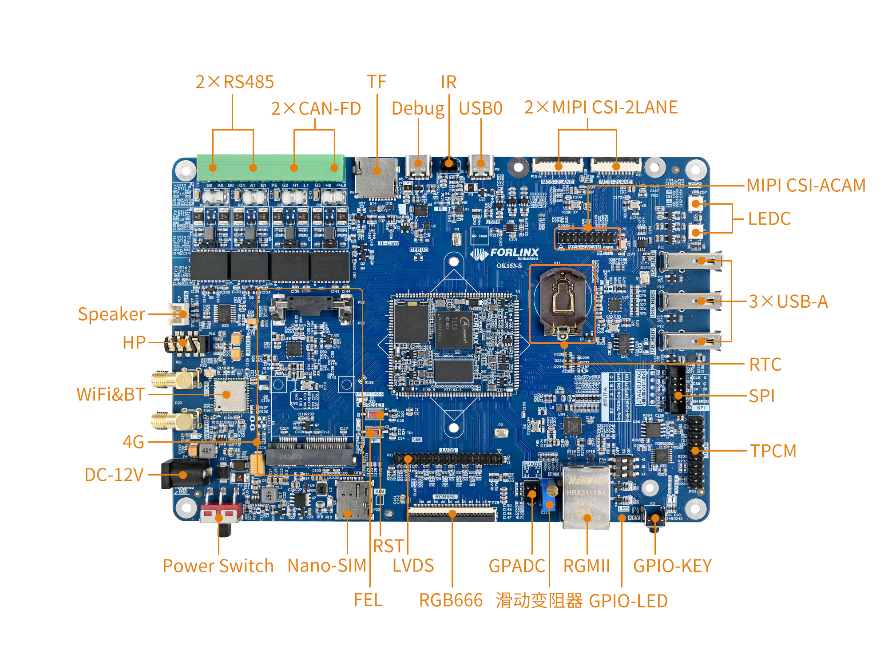
2.2 Serial Port Login
Note:
Settings: Baud rate 115200, 8 data bits, 1 stop bit, no parity/flow control;
Login: Username root, no password;
Software requirements: For Windows systems, the PC needs to have HyperTerminal software installed. There are various HyperTerminal alternatives available; one can use their preferred serial terminal software, such as PUTTY or MobaXterm.
Terminal Setup Using PuTTY （User profile\3-tools\putty-64-bit_x86.exe）as an Example:
1. Connection Steps:
Serial Cable Connection: Use a serial cable to connect the development board to your PC.
Verify Port Number: Open “Device Manager” and confirm the actual serial port number assigned by the computer.
Debug Port Details: The V1.1 debug port includes both the A‑core debug serial port (Port A) and the RISC‑V debug serial port (Port B).
Serial port information:
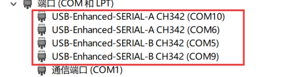
2. Configure PuTTY:
Open PuTTY. In the “Serial line” field, enter the identified COM port and set the baud rate to 115200;
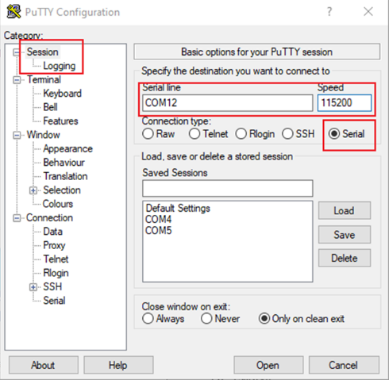
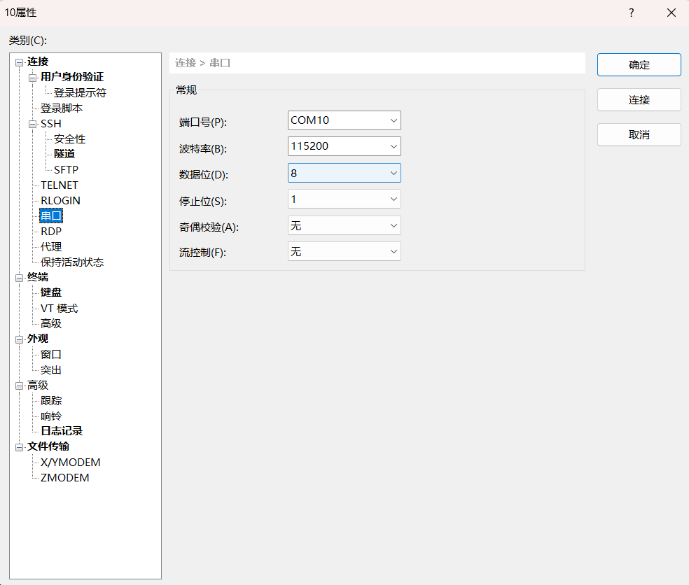
3. Power On and Login: Turn on the development board. Boot messages will display in the serial terminal. Once the prompt root@OKT153:/# appears, the system is fully booted. You are automatically logged in as the root user, with no password required.
2.2.2 Common Issues (Serial Login)
Driver Installation: On first connection, you may need to install the corresponding driver on your PC (located in the user materials at \3-tools\ CP210x_Universal_Windows_Driver.zip).
Cable Quality: To avoid garbled characters during communication, it is recommended to use a high-quality Type-C cable.
2.3 Network Login (SSH)
2.3.1 Network Login Test
Note:
The default IP address for the eth0 interface is 192.168.0.232；
The computer and the development board need to be in the same network segment during the test.
Before logging in to the network, you need to ensure that the network connection between the computer and the development board is normal. You can test the connection status between the computer and the development board through the ping command.
Specific Operations:
1. Network Connection Setup
Connect the eth0 port of the development board to your computer using an Ethernet cable. Power on the board. After the kernel boots, the SoM heartbeat LED will flash red. Once the computer’s network adapter initializes successfully, its indicator will blink rapidly. You may now proceed to test the network connectivity.
2. Disable the computer firewall
Temporarily disable the computer firewall (this is a general operation; specific steps depend on your Windows version);
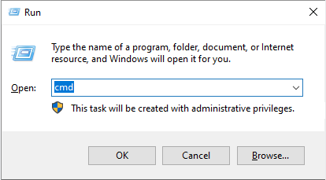
3. Open Command Prompt as administrator
Press Win + R, type cmd, then press Ctrl + Shift + Enter to run Command Prompt as administrator.
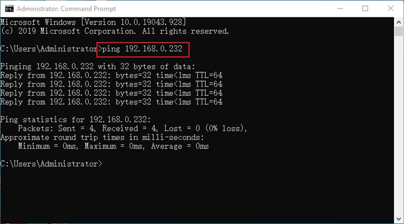
Data is returned, indicating that the network connection is normal.
2.3.2 SSH the server
Note:
The default account for SSH login is “root” without password；
The default IP address for the eth0 interface is 192.168.0.232；
You can use the scp command for file transfers.
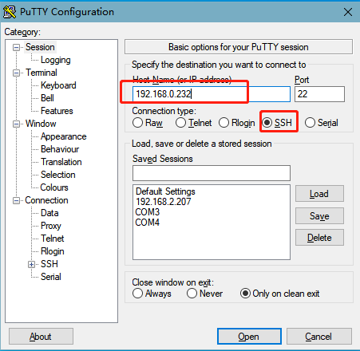
After clicking “Open”, a dialog box will appear. Click “Yes” to proceed to the login interface.

Login as：root //Follow the prompts to enter the development board account root.
root@OKT153:~$
You can use SFTP to copy files. For details, please refer to Section 4.18.2 SFTP.
2.4 Screen Switch
You can switch the screen from the Uboot menu.
2.5 System Partition
2.5.1 EMMC Version
The table below details the eMMC storage partition information for the Linux operating system:
Partition Index |
Name |
Size/MB |
Filesystem |
Content |
|---|---|---|---|---|
mmcblk0p1 |
boot-resource |
16.8 |
FAT32 |
boot-resource |
mmcblk0p2 |
env |
1 |
RAW |
env |
mmcblk0p3 |
env-redund |
1 |
RAW |
env-redund |
mmcblk0p4 |
amp-freertos |
2 |
RAW |
amp-freertos |
mmcblk0p5 |
riscv0 |
1 |
RAW |
riscv0 |
mmcblk0p6 |
private |
124 |
RAW |
private |
mmcblk0p7 |
boot |
57.1 |
RAW |
boot |
mmcblk0p8 |
rootfs |
1024 |
ext4 |
rootfs |
mmcblk0p9 |
UDISK |
Remaining Space |
ext4 |
UDISK |
Use the df command to view disk usage on the system. The following is the factory default disk usage (using the Qt filesystem) for reference only. Actual parameters may vary.
root@OKT153:/# df -Th
Filesystem Type Size Used Avail Use% Mounted on
/dev/root ext4 991M 403M 573M 42% /
devtmpfs devtmpfs 223M 0 223M 0% /dev
tmpfs tmpfs 239M 0 239M 0% /dev/shm
tmpfs tmpfs 239M 64K 239M 1% /tmp
tmpfs tmpfs 239M 232K 239M 1% /run
/dev/mmcblk0p1 vfat 128M 7.0M 121M 6% /run/media/mmcblk0p1
/dev/mmcblk0p9 vfat 7.2G 4.0K 7.2G 1% /mnt/UDISK
Use the free command to view memory usage. The following shows the memory usage when no peripherals are connected ( for reference only). Actual parameters may vary.
root@OKT153:/# free
total used free shared buff/cache available
Mem: 491672 155280 199696 13424 136696 311692
Swap: 0 0 0
2.5.2 Nand Version
The table below details the Nand storage partition information for the Linux operating system:
Partition Index |
Name |
Size |
Filesystem |
Content |
|---|---|---|---|---|
ubi0_0 |
mbr |
1M |
RAW |
mbr |
ubi0_1 |
boot-resource |
10M |
FAT32 |
boot-resource |
ubi0_2 |
env |
1M |
RAW |
env |
ubi0_3 |
env-redund |
1M |
RAW |
env-redund |
ubi0_4 |
amp-freertos |
1.9M |
RAW |
amp-freertos |
ubi0_5 |
riscv0 |
0.9M |
RAW |
riscv0 |
ubi0_6 |
private |
124K |
RAW |
private |
ubi0_7 |
boot |
20.1M |
RAW |
boot |
ubi0_8 |
rootfs |
196.8M |
ext4 |
rootfs |
ubi0_9 |
UDISK |
Remaining Space |
ext4 |
UDISK |
Use the df command to view disk usage on the system. The following is the factory default disk usage (using the Qt filesystem) for reference only. Actual parameters may vary.
root@OKT153:/# df -Th
Filesystem Type Size Used Avail Use% Mounted on
ubi0_8 ubifs 177M 120M 57M 68% /
devtmpfs devtmpfs 96M 0 96M 0% /dev
tmpfs tmpfs 112M 0 112M 0% /dev/shm
tmpfs tmpfs 112M 372K 112M 1% /tmp
tmpfs tmpfs 112M 184K 112M 1% /run
/dev/ubi0_9 ubifs 572K 140K 368K 28% /mnt/UDISK
Use the free command to view memory usage. The following shows the memory usage when no peripherals are connected (for reference only). Actual parameters may vary.
root@OKT153:/# free
total used free shared buff/cache available
Mem: 231764 61092 125884 13104 44788 149836
Swap: 0 0 0
2.6 System Shutdown
Generally, you can power the system down directly. However, if data storage or active operations are in progress, avoid abrupt power loss, as this may cause irreversible file damage and necessitate firmware re‑flashing. To ensure all data is written, execute the sync command to complete data synchronization before powering off.
You can reboot by executing the reboot command. Alternatively, perform a hardware reset by pressing the K1 (RESET) button or by power‑cycling the board.
Note: For designs using the SoM, if unexpected power loss leads to system issues, consider implementing safeguards such as power‑loss protection in the product design.
3. OK153-S Platform Interface Function Usage and Testing
Note:
This section is applicable only if you are using a display screen and the Qt file system. If Qt is not in use, you can skip these steps entirely;
The chapter outlines functionality in the Qt environment. Testing presumes the device connection is normal and drivers are correctly loaded. It is recommended to complete command‑line functionality tests before proceeding with interface‑based tests;
The SPI Nand QT build only supports qtbase. If the listed test programs are not available, you may skip this section;
Qt test program source path:
OK153‑linux‑sdk/platform/thirdparty/forlinx/forlinx_qt_demo/
Path on development board: /usr/bin
This section illustrates how to operate the development board’s extended interfaces via the Qt interface. The provided test programs are for reference only; you should adapt them as necessary for your actual use case.
3.1 Interface Function Description
3.1.1 EMMC Version
After the eMMC version development board boots up, the desktop displays the following:
3.1.2 Nand Version
After the Nand version development board boots up, the desktop displays the following:
There is no QT test program in the Nand version development board, you can skip chapter 3.
3.2 Network Configuration Test
Note:
The factory default only sets the eth0 network card to STATIC mode;
The IP address and related network settings you configure will be saved to the system’s relevant configuration file (
/etc/network/interfaces). This ensures that the same network information will be applied automatically upon each system reboot.
Icon:
Click the network configuration icon to enter the interface program, supporting both STATIC and DHCP modes.
After booting, the desktop displays the following:
STATIC Mode
Click the network configuration icon, select STATIC, as shown below: You can configure the IP address, subnet mask, gateway, and DNS. After setting the parameters, click “Apply and Restart Network”.
Relevant Parameter |
Meaning |
|---|---|
Interface |
Set network card |
IP |
Set IP address |
Netmask |
Set subnet mask |
Gateway |
Set gateway |
DNS |
Set DNS |
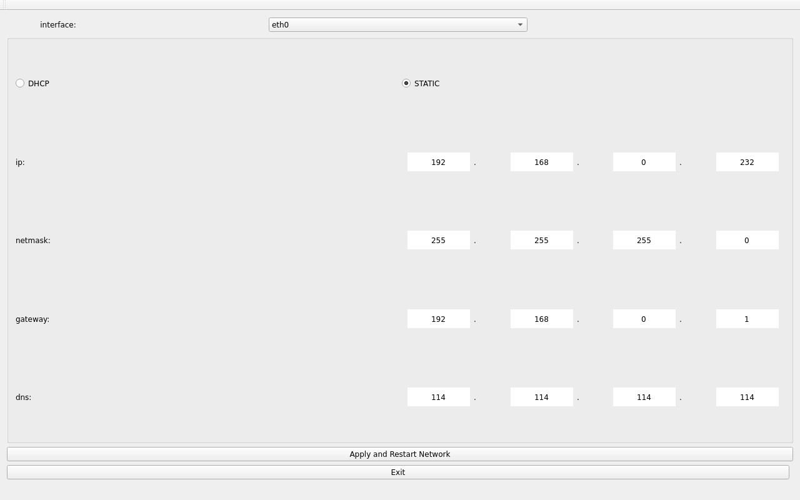
DHCP mode interface is as follows:
Note: Testing must be performed on a router capable of automatically assigning IP addresses.
Select DHCP, choose the network card device to be configured in the “interface” section, and click “Apply and Restart Network” at the bottom of the interface to automatically restart the network and obtain an IP address.
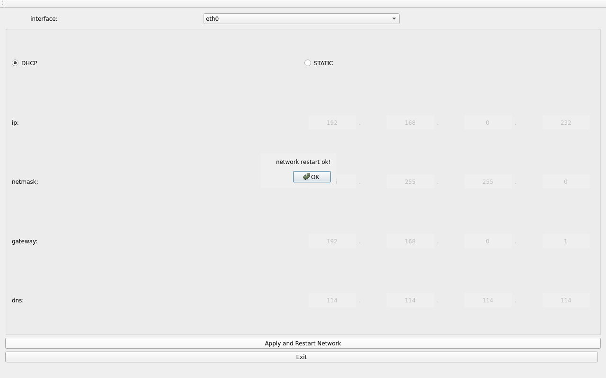
3.3 Browser Test
Icon:
Click the browser icon to enter the browser. Ensure the network is smooth during use, and ensure DNS is available before accessing external networks. The browser defaults to accessing the Forlinx Embedded official website upon startup, as shown below:
Note: If the development board time is abnormal, it may cause certificate issues.
3.4 4G Test
Icon:
After booting, the desktop displays the following:
The “4G” test program is used to verify the functionality of the external 4G module (EC20) on the OKT153 development board. Please follow these steps before testing:
Power off the development board.
Insert the 4G module.
Insert the SIM card into the module, ensuring correct orientation.
Power on the development board and launch the test application.
Note: This example uses the EC20 module. If you are using a different module, please refer to its specific documentation for setup details.
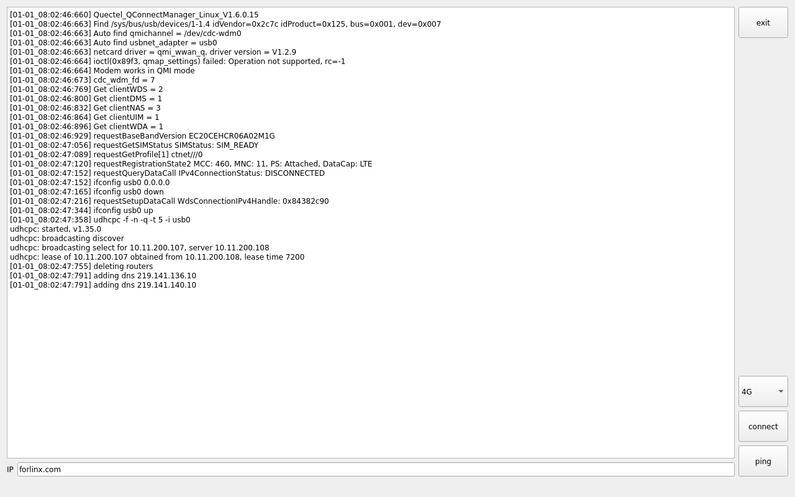
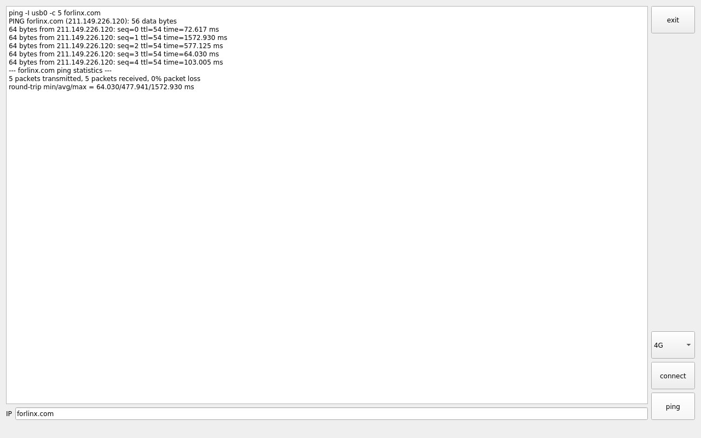
Click the “Connect” button; the program will automatically perform operations such as initiating dial‑up, obtaining an IP address, and configuring DNS. Wait a few seconds, then click the “Ping” button to proceed with the test.
3.5 UART Test
Icon:
This test uses UART5 (ttyAS5) and establishes a connection with UART7 (ttyAS7) to achieve UART data sending and receiving.
1. Click the UART test icon to enter the following interface for serial port parameter configuration;
2. Click the settings button in the upper left corner to configure the serial port parameters;
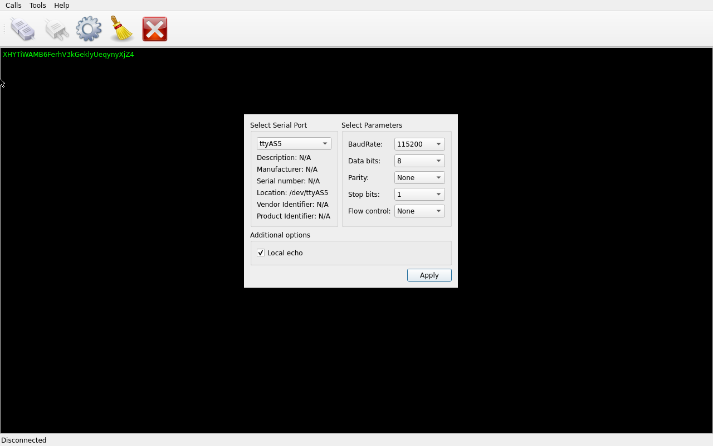
3. Enter commands in the command line to send data through the ttyAS7 port, as shown below:
root@OKT153:/# fltest_uarttest -d /dev/ttyAS7 -b 115200 -D 8 -s 1 -c N -w
tx_0: XHYTiWAMB6FerhV3kGeklyUeqynyXjZ4
4. In the QT interface, you can see the content received by the ttyAS5 port as follows:
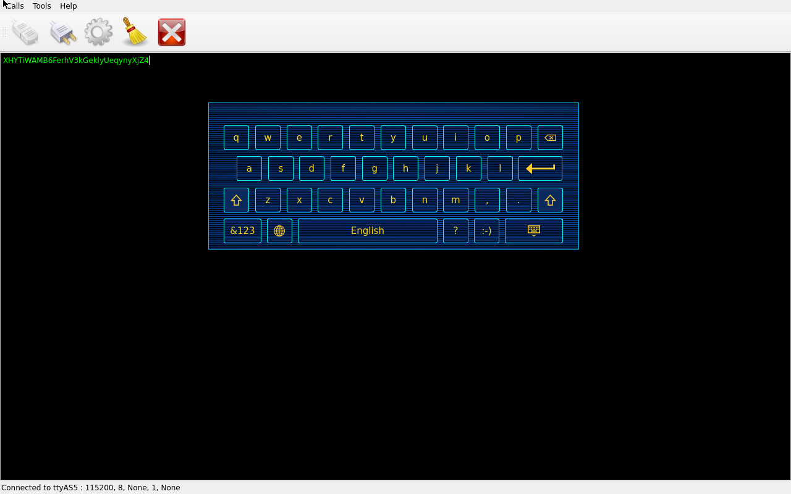
Alternatively, data sending and receiving via UART can also be achieved using a TTL to RS485 module.
Note: The PC-side testing tool can be found in the OKT153 series product materials (User Materials / 3-Tools).
3.6 ADC Test
Icon:
Before testing the adjustable resistor, short‑circuit terminal P4. The resistor can be connected to GPADC0, GPADC1, GPADC2, or GPADC3 via terminal P4. The value of the resistor can be adjusted by turning the knob.
3.7 WiFi Test
Note: The T153S carrier board is soldered with the SDIO 6221A-SRC WIFI/BT chip. This tool is used to configure WiFi and test its STA (Station) mode.
Click the icon to enter the WiFi configuration interface;
In the SSID field, enter the name of the target WiFi router;
In the PAwd field, enter the router’s password;
Click “Connect” to establish a WiFi connection to the router;
Once successfully connected, configure the IP settings and then click “Ping” to run a network connectivity test.
3.8 RTC Test
Note: Ensure that a button battery is installed on the board and the battery voltage is normal.
Icon:
To test the RTC, configure the time via the test software, power cycle the device, and then re-run the software to confirm RTC synchronization.
Run the RTC test software to view and set the current system time RTC, as shown below:
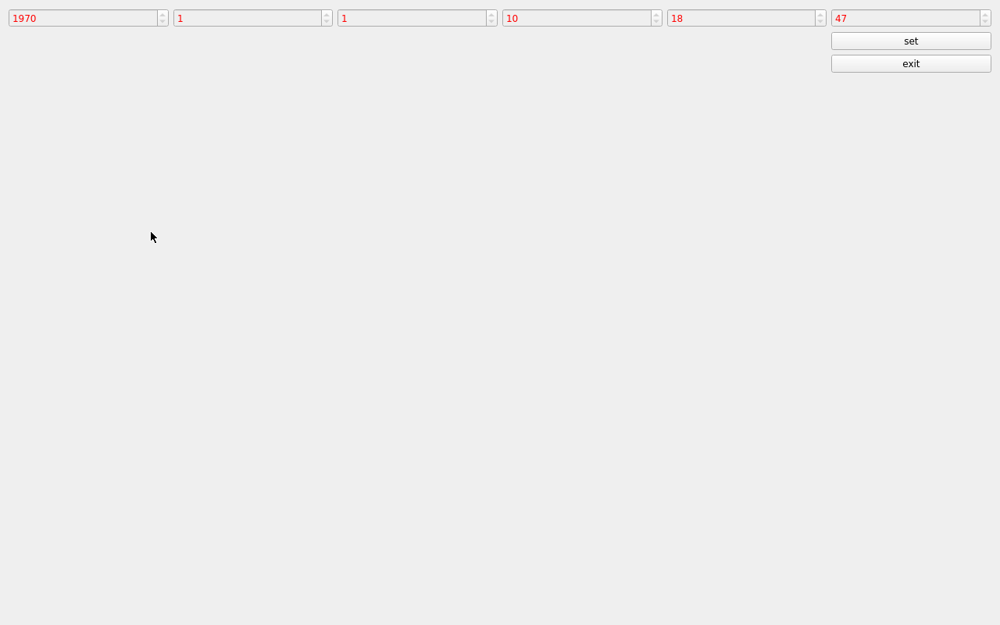
Click “Set” to configure the time, then click “Save” to apply the changes. After that, power off and restart the development board. When you run the RTC test software again, it will automatically read the time. You will then see that the RTC time has been synchronized, confirming that the RTC test is functioning normally.
3.9 Key Test
Icon:
This test verifies the functionality of the built‑in keys by checking whether the corresponding key turns blue when pressed.
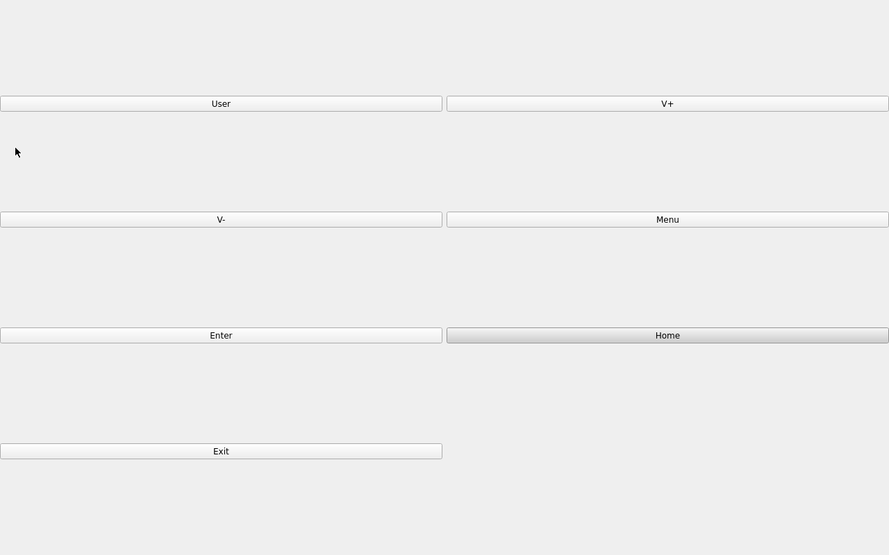
The OKT153 platform has a single physical button. To test it, press the button. If the corresponding key in the test application turns blue, the button is working correctly.
Note: This application can only report key values when a key is pressed.
3.10 Watchdog Test
Icon:
“WatchDog” is an application used to test whether the watchdog function is normal. The interface is as follows:
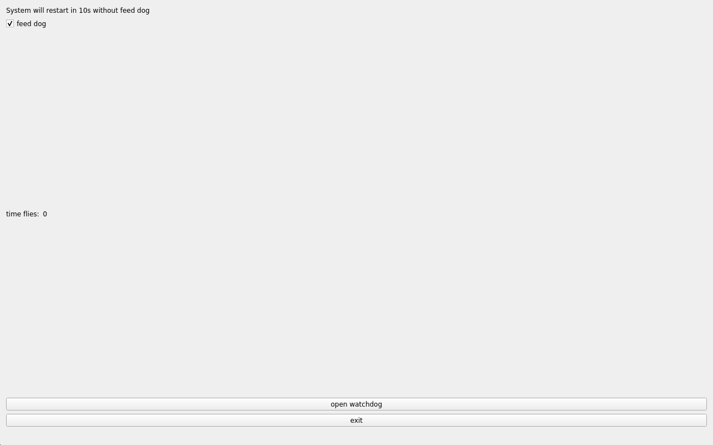
Check “feed dog” and then click “open watchdog”. The watchdog starts, and the program automatically performs feeding operations, so the system will not reboot normally.
Uncheck “feed dog” and then click “open watchdog”. The watchdog starts, but the program does not feed it. About 10 seconds after starting, the system will reboot, confirming that the watchdog is functioning normally.
3.11 Ping Test
Icon:
“Ping” is an interface version of the commonly used network test command ping. The interface is as follows:
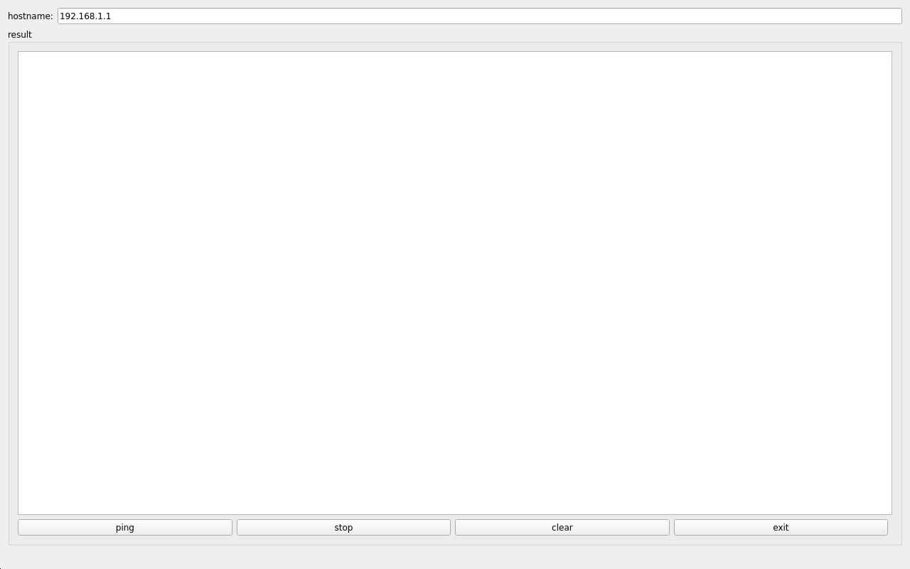
In the hostname field, write the target IP to ping. After clicking the “ping” button, the result field will show the ping result. Click stop to stop the ping test, and click “clear” to clear the information in result.
As shown in the figure, it indicates the network between them is smooth.
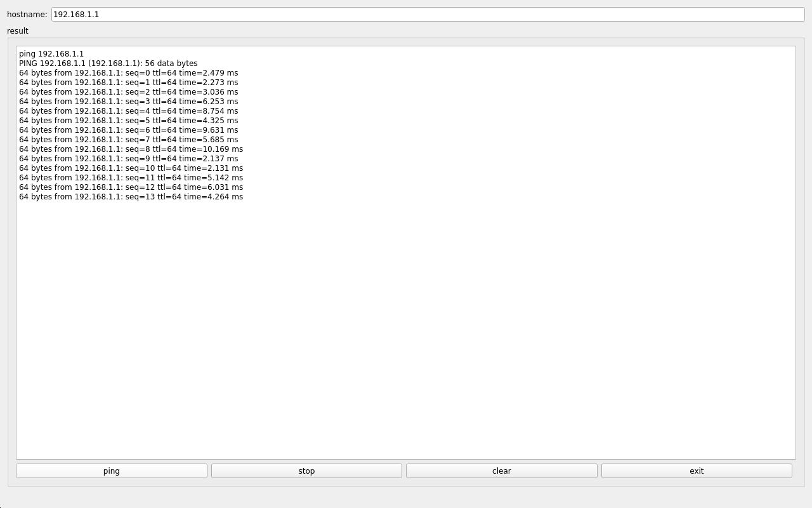
3.12 Camera Test
Icon:
Click the icon to enter the camera test program.
Select the camera device node and resolution, then click “Start” to begin capturing. To take a photo, click “Picture” and choose the save path and file name. Click “Stop” to end the capture
Note: Please select the camera device and resolution according to your actual situation.
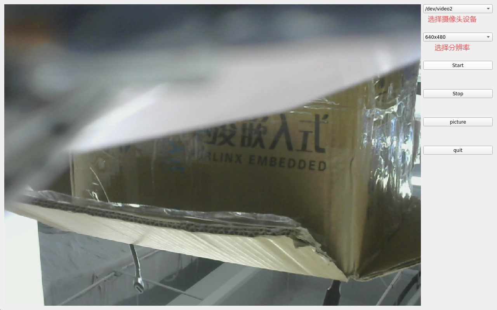
Click “Picture” to take a photo. The image is automatically saved to the /root directory and can be viewed with the default Windows image viewer.
3.13 Backlight Test
Icon:
“BackLight” is an LCD backlight adjustment application. Adjust the progress bar left and right to adjust the backlight brightness. After opening, the interface is as follows:
You can adjust the LCD backlight brightness by dragging the slider in the interface. Level 0 means no backlight, and 255 (150 levels) is the highest brightness.
3.14 Recording Test
Icon:
Connect the microphone to the MIC jack.
Click the icon to open the test application and confirm the recording function is working properly.
Select a save location for the recording, then click “Start” to begin and “Stop” to end.
Click the Input Device radio button and select “sndi2s1”. Click the Channels radio button and select “2”. The interface is as follows:
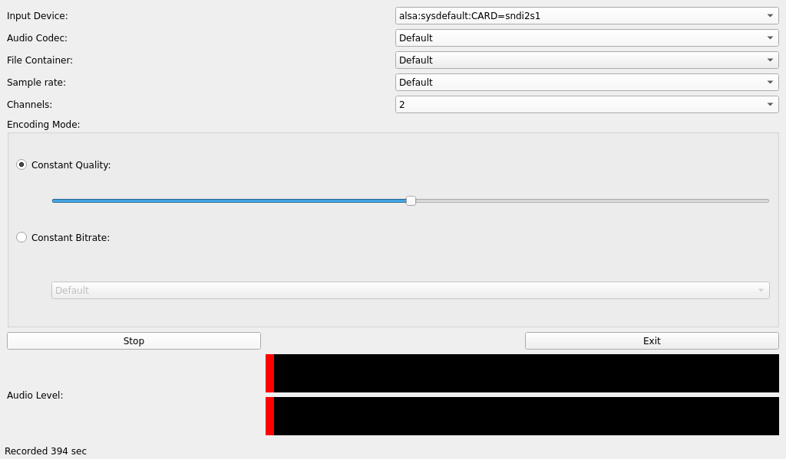
Click the Record button to start the test. The audio file is saved to the root directory as /clip_XXXX.wav.
3.15 Music Playback Test
Icon:
Conduct a music playback test.
“musicplayer” is a simple audio test application that can be used to test whether the sound card functions normally and also serves as a simple audio player.
Application Interface
Click the button in the lower left corner and select the test audio: /forlinx/test.mp3
3.16 CAN Test
Icon:
Conduct CAN test.
After booting, the desktop displays the following:
Configure the CAN port parameters: Click “Select CAN plugin,” choose SocketCAN, check the “Custom configuration” option, configure the “Bitrate,” and click “OK.”
After connection, the desktop displays the following:
Connect the H/L terminals of CAN0 and CAN1, start CAN0 through the CAN QT program, and start CAN1 through the command line to send and receive data.
The actual configuration parameters for can1 need to correspond to those for can0, as follows:
root@OKT153:/# ip link set can1 up type can bitrate 500000
root@OKT153:/# cangen can1
You can see that the Qt program receives the data sent by CAN1.
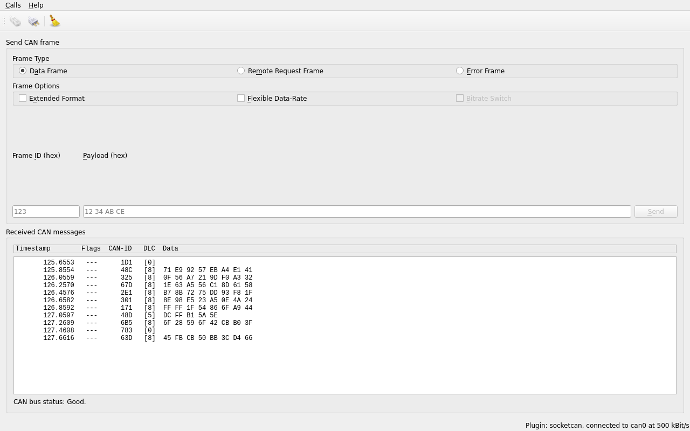
3.16 CAN FD Test
Configure the CAN port parameters: Click “Select CAN plugin,” choose SocketCAN, check the “Custom configuration” option, configure the “Bitrate” and “Date Bitrate,” and click “OK”.
After connection, the desktop displays the following:
Connect the H/L terminals of CAN0 and CAN1, start CAN0 through the CAN QT program, and start CAN1 through the command line to send and receive data.
The actual configuration parameters for can1 need to correspond to those for can0, as follows:
root@OKT153:/# ip link set can1 up type can bitrate 500000 dbitrate 2000000 fd on
root@OKT153:/# cangen -f can1
You can see that the Qt program receives the data sent by CAN1.
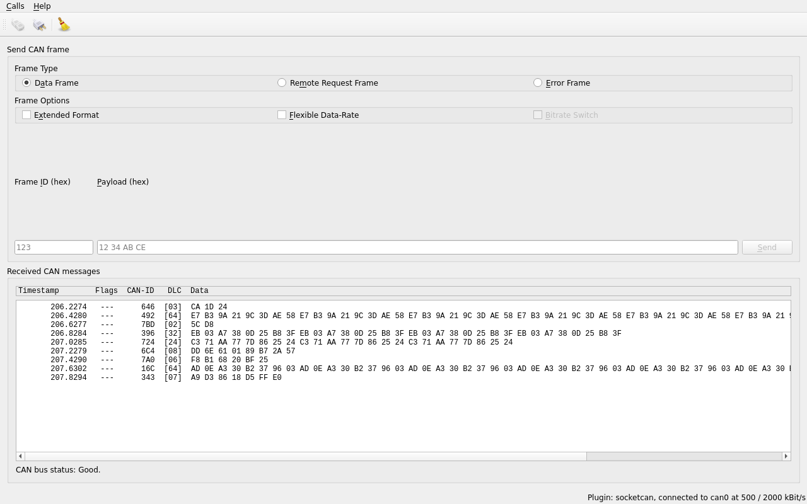
3.17 CPU Frequency Configuration Test
The OKT153 CPU clock is up to 1.6GHz. By default, the CPU will dynamically adjust the clock speed according to the load, but a fixed CPU clock speed can also be set.
Click the desktop settings iconto enter the next-level menu:
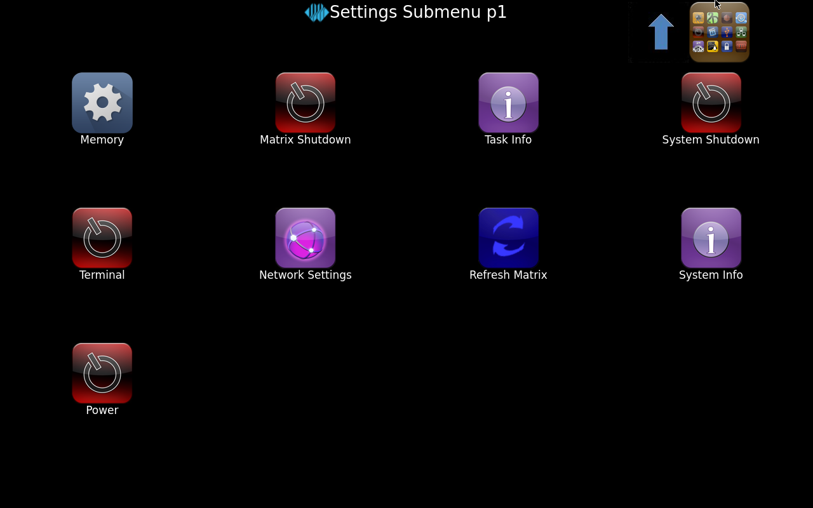
Click the iconto enter the CPU main clock setting page.
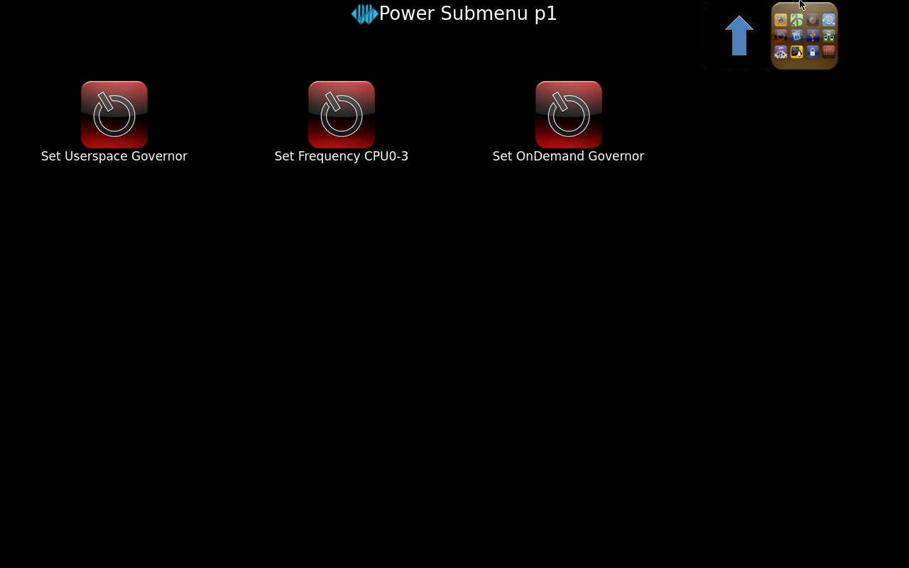
Set OnDemand Governor: Dynamically adjust the main clock on demand.
Set Userspace Governor: Set the main clock in user space.
Set Frequency: Set the main clock.
To set the main clock frequency, first click “Set Userspace Governor”. In the pop-up dialog, select “run”, then click “Set Frequency” to apply a fixed frequency. (Click the top-right arrow to return to the previous directory, or the top-right icon to return to the main directory.)
Select the appropriate clock according to your needs.
3.18 SQLite3 Data Test
Icon:
Click the icon to enter the database test interface.
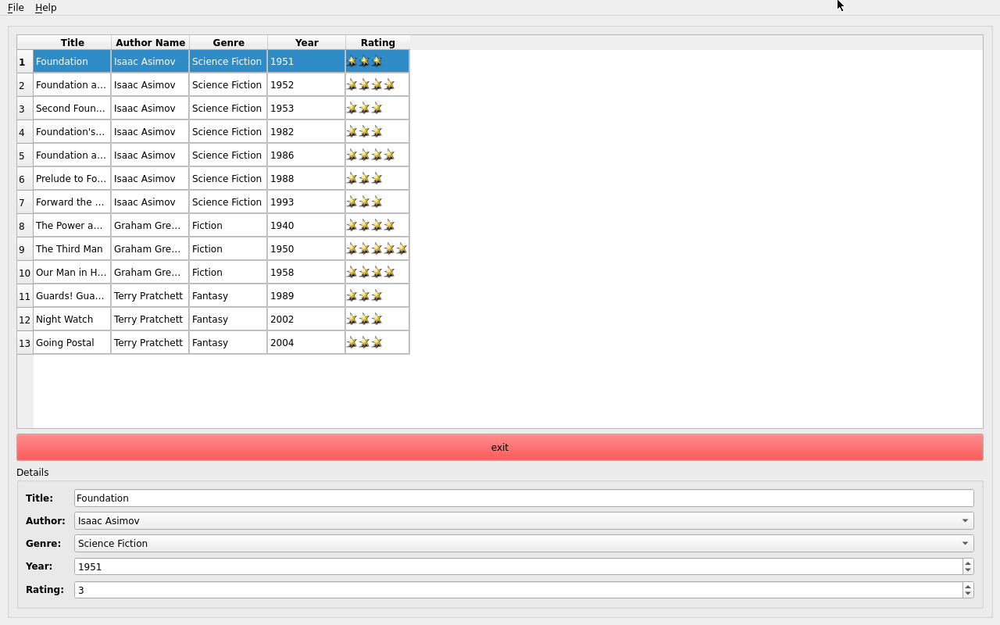
Select the section you want to modify, and then click on the blank area after making the changes.
3.19 SPI Test
Icon:
Click the icon to enter the SPI test interface. Short the P3 SPI1_MOSI and SPI1_MISO pins, click send below, and you can receive the sent data to complete the test.
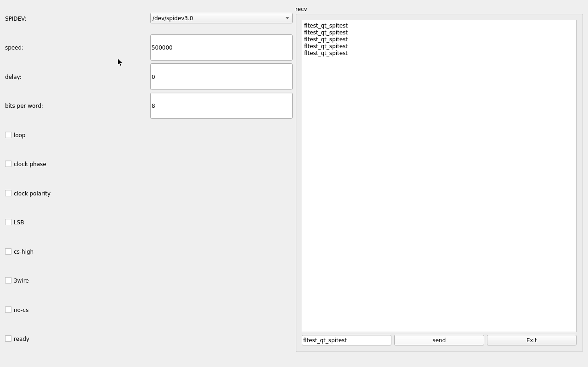
4. OK153-S Command Function Test
The OK153-S platform comes with a rich set of command-line tools for users to utilize.
Test program source code：OKT153-linux-sdk/platform/thirdparty/forlinx/forlinx_cmd_demo/
Local test program path: /usr/bin
4.1 System Information Query
To view kernel information, enter the following command:
root@OKT153:/# uname -a
Linux OKT153 5.10.198 #19 SMP PREEMPT Fri Sep 12 11:52:01 CST 2025 armv7l GNU/Linux
When booting from NOR flash, the kernel information will contain the “-nor” character.
root@OKT153:/# uname -a
Linux OKT153 5.10.198-nor #19 SMP PREEMPT Fri Sep 12 11:52:01 CST 2025 armv7l GNU/Linux
To view CPU information:
root@OKT153:/# cat /proc/cpuinfo
processor : 0
model name : ARMv7 Processor rev 5 (v7l)
BogoMIPS : 34.28
Features : half thumb fastmult vfp edsp neon vfpv3 tls vfpv4 idiva idivt vfpd32 lpae
CPU implementer : 0x41
CPU architecture: 7
CPU variant : 0x0
CPU part : 0xc07
CPU revision : 5
processor : 1
model name : ARMv7 Processor rev 5 (v7l)
BogoMIPS : 34.28
Features : half thumb fastmult vfp edsp neon vfpv3 tls vfpv4 idiva idivt vfpd32 lpae
CPU implementer : 0x41
CPU architecture: 7
CPU variant : 0x0
CPU part : 0xc07
CPU revision : 5
processor : 2
model name : ARMv7 Processor rev 5 (v7l)
BogoMIPS : 34.28
Features : half thumb fastmult vfp edsp neon vfpv3 tls vfpv4 idiva idivt vfpd32 lpae
CPU implementer : 0x41
CPU architecture: 7
CPU variant : 0x0
CPU part : 0xc07
CPU revision : 5
processor : 3
model name : ARMv7 Processor rev 5 (v7l)
BogoMIPS : 34.28
Features : half thumb fastmult vfp edsp neon vfpv3 tls vfpv4 idiva idivt vfpd32 lpae
CPU implementer : 0x41
CPU architecture: 7
CPU variant : 0x0
CPU part : 0xc07
CPU revision : 5
Hardware : Generic DT based system
Revision : 0000
Serial : 0000000000000000
To view environment variable information:
root@OKT153:/# env
SHELL=/bin/sh
bt_mac=
snum=
mbr_offset=7340032
EDITOR=/bin/vi
PWD=/
wifi_mac=
HOME=/
uboot_message=2023.04-rc4-gf6c9ec46
mac_addr=86:3d:96:b1:6d:bb
disp_reserve=2160122,0x4d6fed80
boot_type=0
mac1_addr=86:3d:96:b1:6d:42
QT_QPA_PLATFORM=wayland
TERM=vt102
USER=root
mac2_addr=86:3d:96:b1:6d:a5
SHLVL=1
QT_QPA_FONTDIR=/usr/share/fonts
specialstr=
XDG_RUNTIME_DIR=/var/run
partitions=mbr@ubi0_0:boot-resource@ubi0_1:env@ubi0_2:env-redund@ubi0_3:amp-freertos@ubi0_4:riscv0@ubi0_5:private@ubi0_6:boot@ubi0_7:rootfs@ubi0_8:UDISK@ubi0_9:
PATH=/bin:/sbin:/usr/bin:/usr/sbin
QT_QPA_PLATFORM_PLUGIN_PATH=/usr/lib/qt/plugins/platforms
DBUS_SESSION_BUS_ADDRESS=unix:path=/var/run/dbus/system_bus_socket
QT_PLUGIN_PATH=/usr/lib/qt/plugins
_=/usr/bin/env
4.2 Frequency Test
1. All cpufreq governor types supported in the current kernel:
root@OKT153:/# cat /sys/devices/system/cpu/cpu0/cpufreq/scaling_available_governors
conservative ondemand userspace powersave performance
Among these, userspace represents user mode, which allows other user programs to adjust CPU frequency in this mode.
2. To view the current frequency levels supported by the CPU:
root@OKT153:/# cat /sys/devices/system/cpu/cpu0/cpufreq/scaling_available_frequencies
480000 720000 1008000 1200000 1296000 1416000 1512000 1608000
3. Set to user mode and modify the frequency to 480000:
root@OKT153:/# echo userspace > /sys/devices/system/cpu/cpu0/cpufreq/scaling_governor
root@OKT153:/# echo 480000 > /sys/devices/system/cpu/cpu0/cpufreq/scaling_setspeed
To view the current frequency after modification:
root@OKT153:/# cat /sys/devices/system/cpu/cpu0/cpufreq/cpuinfo_cur_freq
480000
4.3 Temperature Test
To view temperature values:
root@OKT153:/# cat /sys/class/thermal/thermal_zone0/temp
43648
The temperature value is 43℃.
4.4 DDR Bandwidth Test
The current test is conducted at the CPU’s highest frequency of 1608MHz, using DDR3 memory read/write bandwidth.
root@OKT153:/# fltest_memory_bandwidth.sh
L1 cache bandwidth rd test with # process
0.008192 8327.34
0.008192 8317.02
0.008192 8325.83
0.008192 8318.28
0.008192 8329.13
L2 cache bandwidth rd test
0.131072 7759.27
0.131072 7775.25
0.131072 7765.44
0.131072 7746.57
0.131072 7756.30
Main mem bandwidth rd test
52.43 1672.37
52.43 1679.98
52.43 1672.74
52.43 1672.26
52.43 1680.19
L1 cache bandwidth wr test with # process
0.008192 14523.81
0.008192 14524.27
0.008192 14523.81
0.008192 14524.27
0.008192 14508.49
L2 cache bandwidth wr test
0.131072 9497.62
0.131072 9566.42
0.131072 9558.71
0.131072 9542.20
0.131072 9515.21
Main mem bandwidth wr test
52.43 823.73
52.43 818.37
52.43 819.35
52.43 823.98
52.43 823.50
...
The DDR3 bandwidth of the OKT153-S is shown above, with a read bandwidth of approximately 1672M/s and a write bandwidth of approximately 818M/s.
If the CPU frequency in the test environment is low, the read and write bandwidth may decrease.
4.5 Watchdog Test
Watchdog is a commonly used function in embedded systems. The device node for the watchdog in OKT153-S is /dev/watchdog. The maximum watchdog timeout is 16 seconds.
Start the watchdog, set the reset time to 10s, and feed the dog regularly using fltest_watchdog. This command opens the watchdog and performs feeding operations, so the system will not reboot.
root@OKT153:/# fltest_watchdog -t 10 -c
Watchdog Ticking Away!
When using Ctrl+C to end the test program, feeding stops, and the watchdog remains open. After 10s, the system resets.
If you do not want a reset, enter the command to close the watchdog within 10s after ending the program:
root@OKT153:/# fltest_watchdog -d //Turn off the watchdog
Start the watchdog, set the reset time to 10s, and do not feed it.
This command opens the watchdog but does not perform feeding operations. The system will reboot after 10s.
root@OKT153:/# fltest_watchdog -t 10
4.6 RTC Function Test
Note: Ensure that a button battery is installed on the board and the battery voltage is normal..
To perform the RTC test, the date and hwclock tools are used to set the system and hardware clocks. The device is then powered off and on to confirm that the system clock successfully synchronizes with the RTC upon reboot.
root@OKT153:/# date -s "2025-07-10 12:00:30" //Set the software time
Tue Jul 10 12:00:30 CST 2025
root@OKT153:/# hwclock -u -w //Synchronize software time with hardware time
root@OKT153:/# hwclock -u -r //Display the hardware time
Tue Jul 10 12:00:45 2025 0.000000 seconds
Then power off and power on the board. After entering the system, read the system time, and you can see that the time is synchronized.
root@OKT153:/# date
Tue Jul 10 12:10:25 2025
4.7 Key Test
There are three buttons on the carrier board: K1 is the reset button, and K2 is the FEL button, which is used for flashing programs. Additionally, the silkscreen K3 corresponds to a user button with key code 102.
Test the K3 buttons and confirm the event number corresponding to soc@3000000:gpio-keys, which is event5 in this case.
root@OKT153:/root# evtest
No device specified, trying to scan all of /dev/input/event*
Available devices:
/dev/input/event0: sunxi_ir_recv
/dev/input/event1: sunxi-gpadc2/channel0/input0
/dev/input/event2: sunxi-gpadc2/channel1/input0
/dev/input/event3: sunxi-gpadc2/channel2/input0
/dev/input/event4: sunxi-gpadc2/channel3/input0
/dev/input/event5: soc@3000000:gpio-keys
/dev/input/event6: audiocodec Headphones
Select the device event number [0-6]:5
Input driver version is 1.0.1
Input device ID: bus 0x19 vendor 0x1 product 0x1 version 0x100
Input device name: "soc@3000000:gpio-keys"
Supported events:
Event type 0 (EV_SYN)
Event type 1 (EV_KEY)
Event code 102 (KEY_HOME)
Properties:
Testing ... (interrupt to exit)
Event: time 655.391655, type 1 (EV_KEY), code 102 (KEY_HOME), value 1
Event: time 655.391655, -------------- SYN_REPORT ------------
Event: time 655.568921, type 1 (EV_KEY), code 102 (KEY_HOME), value 0
Event: time 655.568921, -------------- SYN_REPORT ------------
Event: time 656.190045, type 1 (EV_KEY), code 102 (KEY_HOME), value 1
Event: time 656.190045, -------------- SYN_REPORT ------------
Event: time 656.384560, type 1 (EV_KEY), code 102 (KEY_HOME), value 0
Event: time 656.384560, -------------- SYN_REPORT ------------
Event: time 657.192848, type 1 (EV_KEY), code 102 (KEY_HOME), value 1
Event: time 657.192848, -------------- SYN_REPORT ------------
Event: time 657.356381, type 1 (EV_KEY), code 102 (KEY_HOME), value 0
Event: time 657.356381, -------------- SYN_REPORT ------------
4.8 Infrared Remote Control Test
There is an infrared receiver on the development board that can receive commands via a remote control; its name is sunxi_ir_recv.
root@OKT153:/root# evtest
No device specified, trying to scan all of /dev/input/event*
Available devices:
/dev/input/event0: sunxi_ir_recv
/dev/input/event1: sunxi-gpadc2/channel0/input0
/dev/input/event2: sunxi-gpadc2/channel1/input0
/dev/input/event3: sunxi-gpadc2/channel2/input0
/dev/input/event4: sunxi-gpadc2/channel3/input0
/dev/input/event5: soc@3000000:gpio-keys
/dev/input/event6: audiocodec Headphones
Select the device event number [0-6]: 0
Input driver version is 1.0.1
Input device ID: bus 0x19 vendor 0x1 product 0x1 version 0x100
Input device name: "sunxi_ir_recv"
Supported events:
Event type 0 (EV_SYN)
Event type 1 (EV_KEY)
Event code 14 (KEY_BACKSPACE)
Event code 15 (KEY_TAB)
Event code 52 (KEY_DOT)
Event code 83 (KEY_KPDOT)
Event code 102 (KEY_HOME)
Event code 103 (KEY_UP)
Event code 105 (KEY_LEFT)
Event code 106 (KEY_RIGHT)
Event code 108 (KEY_DOWN)
Event code 113 (KEY_MUTE)
Event code 114 (KEY_VOLUMEDOWN)
Event code 115 (KEY_VOLUMEUP)
Event code 116 (KEY_POWER)
Event code 119 (KEY_PAUSE)
Event code 128 (KEY_STOP)
Event code 139 (KEY_MENU)
Event code 141 (KEY_SETUP)
Event code 158 (KEY_BACK)
Event code 163 (KEY_NEXTSONG)
Event code 164 (KEY_PLAYPAUSE)
Event code 165 (KEY_PREVIOUSSONG)
Event code 166 (KEY_STOPCD)
Event code 168 (KEY_REWIND)
Event code 207 (KEY_PLAY)
Event code 208 (KEY_FASTFORWARD)
Event code 256 (BTN_0)
Event code 352 (KEY_OK)
Event code 365 (KEY_EPG)
Event code 377 (KEY_TV)
Event code 402 (KEY_CHANNELUP)
Event code 403 (KEY_CHANNELDOWN)
Event code 407 (KEY_NEXT)
Event code 412 (KEY_PREVIOUS)
Event code 512 (KEY_NUMERIC_0)
Event code 513 (KEY_NUMERIC_1)
Event code 514 (KEY_NUMERIC_2)
Event code 515 (KEY_NUMERIC_3)
Event code 516 (KEY_NUMERIC_4)
Event code 517 (KEY_NUMERIC_5)
Event code 518 (KEY_NUMERIC_6)
Event code 519 (KEY_NUMERIC_7)
Event code 520 (KEY_NUMERIC_8)
Event code 521 (KEY_NUMERIC_9)
Event code 535 (KEY_CAMERA_UP)
Event code 536 (KEY_CAMERA_DOWN)
Event code 717 (BTN_TRIGGER_HAPPY14)
Event code 719 (BTN_TRIGGER_HAPPY16)
Event code 721 (BTN_TRIGGER_HAPPY18)
Event type 2 (EV_REL)
Event code 0 (REL_X)
Event code 1 (REL_Y)
Event type 4 (EV_MSC)
Event code 4 (MSC_SCAN)
Key repeat handling:
Repeat type 20 (EV_REP)
Repeat code 0 (REP_DELAY)
Value 500
Repeat code 1 (REP_PERIOD)
Value 125
Properties:
Property type 5 (INPUT_PROP_POINTING_STICK)
Testing ... (interrupt to exit)
Event: time 704.092327, type 4 (EV_MSC), code 4 (MSC_SCAN), value 45
Event: time 704.092327, -------------- SYN_REPORT ------------
Event: time 704.143571, type 4 (EV_MSC), code 4 (MSC_SCAN), value 45
Event: time 704.143571, -------------- SYN_REPORT ------------
Event: time 704.250545, type 4 (EV_MSC), code 4 (MSC_SCAN), value 45
Event: time 704.250545, -------------- SYN_REPORT ------------
Event: time 704.357488, type 4 (EV_MSC), code 4 (MSC_SCAN), value 45
Event: time 704.357488, -------------- SYN_REPORT ------------
Event: time 704.464498, type 4 (EV_MSC), code 4 (MSC_SCAN), value 45
Event: time 704.464498, -------------- SYN_REPORT ------------
Event: time 705.261756, type 4 (EV_MSC), code 4 (MSC_SCAN), value 46
Event: time 705.261756, -------------- SYN_REPORT ------------
Event: time 705.312976, type 4 (EV_MSC), code 4 (MSC_SCAN), value 46
Event: time 705.312976, -------------- SYN_REPORT ------------
Event: time 707.309670, type 4 (EV_MSC), code 4 (MSC_SCAN), value 47
Event: time 707.309670, -------------- SYN_REPORT ------------
Event: time 707.360912, type 4 (EV_MSC), code 4 (MSC_SCAN), value 47
Event: time 707.360912, -------------- SYN_REPORT ------------
Event: time 708.086960, type 4 (EV_MSC), code 4 (MSC_SCAN), value 40
Event: time 708.086960, -------------- SYN_REPORT ------------
Event: time 708.138202, type 4 (EV_MSC), code 4 (MSC_SCAN), value 40
Event: time 708.138202, -------------- SYN_REPORT ------------
Event: time 708.877030, type 4 (EV_MSC), code 4 (MSC_SCAN), value 43
Event: time 708.877030, -------------- SYN_REPORT ------------
Event: time 708.928283, type 4 (EV_MSC), code 4 (MSC_SCAN), value 43
Event: time 708.928283, -------------- SYN_REPORT ------------
Event: time 710.139814, type 4 (EV_MSC), code 4 (MSC_SCAN), value 44
Event: time 710.139814, -------------- SYN_REPORT ------------
Event: time 710.191067, type 4 (EV_MSC), code 4 (MSC_SCAN), value 44
Event: time 710.191067, -------------- SYN_REPORT ------------
Event: time 710.298074, type 4 (EV_MSC), code 4 (MSC_SCAN), value 44
Event: time 710.298074, -------------- SYN_REPORT ------------
Event: time 710.745333, type 4 (EV_MSC), code 4 (MSC_SCAN), value 07
Event: time 710.745333, type 1 (EV_KEY), code 352 (KEY_OK), value 1
Event: time 710.745333, -------------- SYN_REPORT ------------
Event: time 710.796590, type 4 (EV_MSC), code 4 (MSC_SCAN), value 07
Event: time 710.796590, -------------- SYN_REPORT ------------
Event: time 710.910025, type 1 (EV_KEY), code 352 (KEY_OK), value 0
Event: time 710.910025, -------------- SYN_REPORT ------------
Event: time 711.450823, type 4 (EV_MSC), code 4 (MSC_SCAN), value 15
Event: time 711.450823, type 1 (EV_KEY), code 519 (KEY_NUMERIC_7), value 1
Event: time 711.450823, -------------- SYN_REPORT ------------
Event: time 711.502049, type 4 (EV_MSC), code 4 (MSC_SCAN), value 15
Event: time 711.502049, -------------- SYN_REPORT ------------
Event: time 711.620014, type 1 (EV_KEY), code 519 (KEY_NUMERIC_7), value 0
Event: time 711.620014, -------------- SYN_REPORT ------------
Event: time 712.176408, type 4 (EV_MSC), code 4 (MSC_SCAN), value 09
Event: time 712.176408, -------------- SYN_REPORT ------------
Event: time 712.227603, type 4 (EV_MSC), code 4 (MSC_SCAN), value 09
Event: time 712.227603, -------------- SYN_REPORT ------------
Event: time 712.334578, type 4 (EV_MSC), code 4 (MSC_SCAN), value 09
Event: time 712.334578, -------------- SYN_REPORT ------------
Event: time 713.362604, type 4 (EV_MSC), code 4 (MSC_SCAN), value 16
Event: time 713.362604, type 1 (EV_KEY), code 516 (KEY_NUMERIC_4), value 1
Event: time 713.362604, -------------- SYN_REPORT ------------
Event: time 713.413828, type 4 (EV_MSC), code 4 (MSC_SCAN), value 16
Event: time 713.413828, -------------- SYN_REPORT ------------
Event: time 713.530017, type 1 (EV_KEY), code 516 (KEY_NUMERIC_4), value 0
Event: time 713.530017, -------------- SYN_REPORT ------------
Event: time 714.029797, type 4 (EV_MSC), code 4 (MSC_SCAN), value 0c
Event: time 714.029797, -------------- SYN_REPORT ------------
Event: time 714.081032, type 4 (EV_MSC), code 4 (MSC_SCAN), value 0c
Event: time 714.081032, -------------- SYN_REPORT ------------
Event: time 715.060930, type 4 (EV_MSC), code 4 (MSC_SCAN), value 19
Event: time 715.060930, type 1 (EV_KEY), code 520 (KEY_NUMERIC_8), value 1
Event: time 715.060930, -------------- SYN_REPORT ------------
Event: time 715.112154, type 4 (EV_MSC), code 4 (MSC_SCAN), value 19
Event: time 715.112154, -------------- SYN_REPORT ------------
Event: time 715.230015, type 1 (EV_KEY), code 520 (KEY_NUMERIC_8), value 0
Event: time 715.230015, -------------- SYN_REPORT ------------
Event: time 715.501977, type 4 (EV_MSC), code 4 (MSC_SCAN), value 18
Event: time 715.501977, type 1 (EV_KEY), code 512 (KEY_NUMERIC_0), value 1
Event: time 715.501977, -------------- SYN_REPORT ------------
Event: time 715.553188, type 4 (EV_MSC), code 4 (MSC_SCAN), value 18
Event: time 715.553188, -------------- SYN_REPORT ------------
Event: time 715.670016, type 1 (EV_KEY), code 512 (KEY_NUMERIC_0), value 0
Event: time 715.670016, -------------- SYN_REPORT ------------
Event: time 716.059811, type 4 (EV_MSC), code 4 (MSC_SCAN), value 0d
Event: time 716.059811, -------------- SYN_REPORT ------------
Event: time 716.111038, type 4 (EV_MSC), code 4 (MSC_SCAN), value 0d
Event: time 716.111038, -------------- SYN_REPORT ------------
Event: time 716.526701, type 4 (EV_MSC), code 4 (MSC_SCAN), value 5e
Event: time 716.526701, type 1 (EV_KEY), code 365 (KEY_EPG), value 1
Event: time 716.526701, -------------- SYN_REPORT ------------
Event: time 716.577931, type 4 (EV_MSC), code 4 (MSC_SCAN), value 5e
Event: time 716.577931, -------------- SYN_REPORT ------------
Event: time 716.690016, type 1 (EV_KEY), code 365 (KEY_EPG), value 0
Event: time 716.690016, -------------- SYN_REPORT ------------
Event: time 717.139498, type 4 (EV_MSC), code 4 (MSC_SCAN), value 5a
Event: time 717.139498, type 1 (EV_KEY), code 108 (KEY_DOWN), value 1
Event: time 717.139498, -------------- SYN_REPORT ------------
Event: time 717.190724, type 4 (EV_MSC), code 4 (MSC_SCAN), value 5a
Event: time 717.190724, -------------- SYN_REPORT ------------
Event: time 717.310021, type 1 (EV_KEY), code 108 (KEY_DOWN), value 0
Event: time 717.310021, -------------- SYN_REPORT ------------
Event: time 717.727072, type 4 (EV_MSC), code 4 (MSC_SCAN), value 4a
Event: time 717.727072, -------------- SYN_REPORT ------------
Event: time 717.778301, type 4 (EV_MSC), code 4 (MSC_SCAN), value 4a
Event: time 717.778301, -------------- SYN_REPORT ------------
Event: time 718.332445, type 4 (EV_MSC), code 4 (MSC_SCAN), value 52
Event: time 718.332445, type 1 (EV_KEY), code 102 (KEY_HOME), value 1
Event: time 718.332445, -------------- SYN_REPORT ------------
Event: time 718.450021, type 1 (EV_KEY), code 102 (KEY_HOME), value 0
Event: time 718.450021, -------------- SYN_REPORT ------------
Event: time 718.847163, type 4 (EV_MSC), code 4 (MSC_SCAN), value 1c
Event: time 718.847163, type 1 (EV_KEY), code 14 (KEY_BACKSPACE), value 1
Event: time 718.847163, -------------- SYN_REPORT ------------
Event: time 718.898351, type 4 (EV_MSC), code 4 (MSC_SCAN), value 1c
Event: time 718.898351, -------------- SYN_REPORT ------------
Event: time 719.010030, type 1 (EV_KEY), code 14 (KEY_BACKSPACE), value 0
Event: time 719.010030, -------------- SYN_REPORT ------------
Event: time 720.357999, type 4 (EV_MSC), code 4 (MSC_SCAN), value 08
Event: time 720.357999, -------------- SYN_REPORT ------------
Event: time 720.409269, type 4 (EV_MSC), code 4 (MSC_SCAN), value 08
Event: time 720.409269, -------------- SYN_REPORT ------------
Event: time 721.645301, type 4 (EV_MSC), code 4 (MSC_SCAN), value 42
Event: time 721.645301, -------------- SYN_REPORT ------------
Event: time 721.696552, type 4 (EV_MSC), code 4 (MSC_SCAN), value 42
Event: time 721.696552, -------------- SYN_REPORT ------------
Event: time 721.803536, type 4 (EV_MSC), code 4 (MSC_SCAN), value 42
Event: time 721.803536, -------------- SYN_REPORT ------------
...
4.9 UART Test
The OKT153-S development board is equipped with 4 UART interfaces, which are distributed on the development board as follows:
UART |
Device Nodes |
Description |
|---|---|---|
UART0 |
/dev/ttyAS0 |
The serial port cannot be directly used for this test. |
UART1 |
/dev/ttyAS1 |
Integrated into the BT/WIFI module. |
UART5 |
/dev/ttyAS5 |
RS485 level, which can be used for this test. |
UART7 |
/dev/ttyAS7 |
RS485 level, which can be used for this test. |
The current SDK version is configured to use a 24MHz clock and supports a maximum speed of 1.5Mbps. Baud Rate Table
UART Clock |
Baud Rate |
|---|---|
24000000 |
300 |
24000000 |
600 |
24000000 |
1200 |
24000000 |
2400 |
24000000 |
4800 |
24000000 |
9600 |
24000000 |
19200 |
24000000 |
38400 |
24000000 |
57600 |
24000000 |
115200 |
24000000 |
230400 |
24000000 |
921600 |
24000000 |
1000000 |
24000000 |
1500000 |
485 testing follows the same procedure as TTL serial ports. Testing options include using an RS485-to-TTL module with a computer, or directly connecting the ttyAS5 and ttyAS7 ports.
RS485 testing follows the same basic procedure as standard TTL serial port testing. Two connection methods are available:
Using an RS485-to-TTL Module with a Computer: Connect the device to a computer via an RS485-to-TTL adapter for testing and data monitoring;
Directly connect the ttyAS5 and ttyAS7 ports.
4.9.1 RS485
This test uses UART5-UART7 ports for loopback testing.
Enter the following command in the development board serial port to test UART reception:
root@OKT153:/# fltest_uarttest -d /dev/ttyAS5 -b 115200 -D 8 -s 1 -c N -r &
Enter the following command in the development board serial port to test UART transmission:
root@OKT153:/# fltest_uarttest -d /dev/ttyAS7 -b 115200 -D 8 -s 1 -c N -w
Finally, the received information can be seen on the development board serial port.
rx_0: gxcHyxtJZ6PXxtVo1zfQG3fJLyRLvDwb
tx_0: gxcHyxtJZ6PXxtVo1zfQG3fJLyRLvDwb
4.10 USB to Quad Serial Port Test
Note:
Supports XR21V1414 USB to serial port chip driver;
The USB to four-serial-port adapter is an optional module. If you require it, please contact Forlinx Embedded sales personnel.
1. After the development board powers on, connect the USB to quad serial port module via the USB HOST interface. The terminal will display the following information:
root@OKT153:/# [ 93.708671] usb 1-1.2: new full-speed USB device number 4 using sunxi-ehci
[ 94.019353] cdc_xr_usb_serial 1-1.2:1.0: This device cannot do calls on its own. It is not a modem.
[ 94.051170] cdc_xr_usb_serial 1-1.2:1.0: ttyXR_USB_SERIAL0: USB XR_USB_SERIAL device
[ 94.071060] cdc_xr_usb_serial 1-1.2:1.2: This device cannot do calls on its own. It is not a modem.
[ 94.100860] cdc_xr_usb_serial 1-1.2:1.2: ttyXR_USB_SERIAL1: USB XR_USB_SERIAL device
[ 94.120908] cdc_xr_usb_serial 1-1.2:1.4: This device cannot do calls on its own. It is not a modem.
[ 94.140883] cdc_xr_usb_serial 1-1.2:1.4: ttyXR_USB_SERIAL2: USB XR_USB_SERIAL device
[ 94.170770] cdc_xr_usb_serial 1-1.2:1.6: This device cannot do calls on its own. It is not a modem.
[ 94.183344] cdc_xr_usb_serial 1-1.2:1.6: ttyXR_USB_SERIAL3: USB XR_USB_SERIAL device
[ 94.197509] usbcore: registered new interface driver cdc_xr_usb_serial
[ 94.208693] xr_usb_serial_common: Exar USB UART (serial port) driver
2. Check the status of USB devices using lsusb:
root@OKT153:/# lsusb
Bus 001 Device 001: ID 1d6b:0002
Bus 001 Device 002: ID 1a40:0101
Bus 002 Device 001: ID 1d6b:0001
Bus 001 Device 003: ID 0bda:d723
Bus 004 Device 002: ID 04e2:1414 //The VID and PID of the conversion chip
Check if nodes have been generated under dev:
root@OKT153:/# ls /dev/ttyXRUSB*
/dev/ttyXRUSB0 /dev/ttyXRUSB1 /dev/ttyXRUSB2 /dev/ttyXRUSB3
3. The correspondence between the four extended serial ports and the device nodes is shown in the following figure:
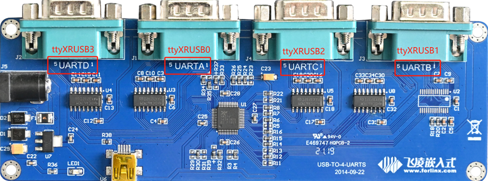
Testing follows the same procedure as RS485 and can be performed using the fltest_uarttest command.
root@OKT153:/# fltest_uarttest -d /dev/ttyXRUSB1 -b 115200 -D 8 -s 1 -c N -r &
root@OKT153:/# fltest_uarttest -d /dev/ttyXRUSB2 -b 115200 -D 8 -s 1 -c N -w
tx_0: xryV0i4JTypwQEFS4qL2dFBPvO2bGacE
rx_0: xryV0i4JTypwQEFS4qL2dFBPvO2bGacE
4.11 GPADC Test
There are 4 x 12-bit GPADC on the development board. The voltage sampling range is 0 ~ 1.8 V. Before testing the value of the adjustable resistor, it is necessary to short circuit the P14 terminal, and select GPADC0 or GPADC1 or GPADC2 or GPADC3 through the P14 terminal to access the potentiometer:
Turn the knob to change the values.
root@OKT153:/# cat /sys/bus/iio/devices/iio\:device0/in_voltage0_raw
4095
root@OKT153:/# cat /sys/bus/iio/devices/iio\:device0/in_voltage1_raw
4095
root@OKT153:/# cat /sys/bus/iio/devices/iio\:device0/in_voltage2_raw
4095
root@OKT153:/# cat /sys/bus/iio/devices/iio\:device0/in_voltage3_raw
4095
4.12 TF Test
Note:
The SD card mount directory is /run/media, supporting hot plugging. The terminal will print information about the SD card;
NTFS format file system is not supported. If you do not know the TF card format, it is recommended to format it to FAT32 before use. The default partition size;
For the eMMC version, the device node after inserting the TF card is “/dev/mmcblk1”; for the Nand version, the device node after inserting the TF card is “/dev/mmcblk0”;
The following test commands are based on the NAND version.
1. Insert the TF card into the slot on the carrier board. After running the dmesg command in the terminal, the following information wil be displayed:
root@OKT153:/# dmesg|grep mmc
[ 2412.600810] sunxi:sunxi_mmc_host-4020000.sdmmc:[INFO]: sdc set ios:clk 0Hz bm PP pm UP vdd 21 width 1 timing LEGACY(SDR12) dt B
[ 2412.600916] sunxi:sunxi_mmc_host-4020000.sdmmc:[INFO]: no vqmmc,Check if there is regulator
[ 2412.613439] sunxi:sunxi_mmc_host-4020000.sdmmc:[INFO]: sdc set ios:clk 400000Hz bm PP pm ON vdd 21 width 1 timing LEGACY(SDR12) dt B
[ 2412.626058] sunxi:sunxi_mmc_host-4020000.sdmmc:[INFO]: sdc set ios:clk 400000Hz bm PP pm ON vdd 21 width 1 timing LEGACY(SDR12) dt B
[ 2412.629032] sunxi:sunxi_mmc_host-4020000.sdmmc:[INFO]: sdc set ios:clk 400000Hz bm PP pm ON vdd 21 width 1 timing LEGACY(SDR12) dt B
[ 2412.631308] sunxi:sunxi_mmc_host-4020000.sdmmc:[INFO]: sdc set ios:clk 400000Hz bm PP pm ON vdd 21 width 1 timing LEGACY(SDR12) dt B
[ 2412.634267] sunxi:sunxi_mmc_host-4020000.sdmmc:[INFO]: sdc set ios:clk 400000Hz bm PP pm ON vdd 21 width 1 timing LEGACY(SDR12) dt B
[ 2412.822093] sunxi:sunxi_mmc_host-4020000.sdmmc:[INFO]: sdc set ios:clk 0Hz bm PP pm ON vdd 21 width 1 timing LEGACY(SDR12) dt B
[ 2412.822111] sunxi:sunxi_mmc_host-4020000.sdmmc:[INFO]: no vqmmc,Check if there is regulator
[ 2412.834667] sunxi:sunxi_mmc_host-4020000.sdmmc:[INFO]: sdc set ios:clk 400000Hz bm PP pm ON vdd 21 width 1 timing LEGACY(SDR12) dt B
[ 2412.843919] mmc0: host does not support reading read-only switch, assuming write-enable
[ 2412.844563] sunxi:sunxi_mmc_host-4020000.sdmmc:[INFO]: sdc set ios:clk 400000Hz bm PP pm ON vdd 21 width 4 timing LEGACY(SDR12) dt B
[ 2412.847162] sunxi:sunxi_mmc_host-4020000.sdmmc:[INFO]: sdc set ios:clk 400000Hz bm PP pm ON vdd 21 width 4 timing UHS-SDR104 dt B
[ 2412.847238] sunxi:sunxi_mmc_host-4020000.sdmmc:[INFO]: sdc set ios:clk 150000000Hz bm PP pm ON vdd 21 width 4 timing UHS-SDR104 dt B
[ 2412.847604] mmc0: new ultra high speed SDR104 SDHC card at address aaaa
[ 2412.849338] mmcblk0: mmc0:aaaa SL16G 14.8 GiB
[ 2412.857324] mmcblk0: p1 p2 p3 p4 p5 p6 p7 p8 p9
root@OKT153:/#
2. Check the mount directory:
root@OKT153:/# ls /run/media //List files in the/run/media directory
mmcblk0p1 mmcblk0p6
3. Write test:
root@OKT153:/# dd if=/dev/zero of=/run/media/mmcblk0p1/test bs=1M count=500 conv=fsync
500+0 records in
500+0 records out
524288000 bytes (524 MB, 500 MiB) copied, 38.6685 s, 13.6 MB/s
4. Read test:
Note: To ensure the accuracy of the data, please restart the development board to test the reading speed.
root@OKT153:/# dd if=/dev/mmcblk0p1 of=/dev/null bs=1M count=500 iflag=direct
500+0 records in
500+0 records out
524288000 bytes (524 MB, 500 MiB) copied, 22.1137 s, 23.7 MB/s
5. After using the TF card, you need to use umount to unmount the TF card before ejecting it.
root@OKT153:/# umount /run/media/mmcblk0p1
Note: Exit the TF card mount path before removing the TF card.
4.13 Storage Test
4.13.1 Nand Version
OKT153-S Platform: Default SPI Nand driver support with ubifs file system.
root@OKT153:/opt# cat /proc/mtd
dev: size erasesize name
mtd0: 00100000 00020000 "boot0"
mtd1: 00300000 00020000 "uboot"
mtd2: 00100000 00020000 "secure_storage"
mtd3: 00020000 00020000 "boot_param"
mtd4: 0fae0000 00020000 "sys"
Among these, mtd0-mtd3 are the partitions required for uboot booting, while mtd4 is the ubifs file system partition.
4.14 USB Mouse Test
Note: Supports hot-swapping of USB mice and USB keyboards.
When a USB mouse is connected to the USB port of the OKT153 platform, the serial terminal prints the following information:
root@OKT153:/# [08:17:55.1023] event14 - PixArt USB Optical Mouse: is tagged by udev as: Mouse
[08:17:55.-1092392384] event14 - PixArt USB Optical Mouse: device is a pointer
[08:17:55.-1225213578] libinput: configuring device "PixArt USB Optical Mouse".
[08:17:55.-1226023629] associating input device event14 with output LVDS-1 (none by udev)
An arrow cursor appears on the screen, and the mouse is now working properly.
When the USB mouse is unplugged, the arrow cursor disappears from the screen, indicating that the mouse has been successfully removed.
4.15 USB 2.0
Note:
Hot plugging of USB devices is supported;
NTFS format file systems are not supported. If unsure about the USB drive format, it is recommended to format it to FAT32 before use.
The OKT153-S supports 2 x USB 2.0, allowing users to connect USB mice, USB keyboards, USB flash drives, and other devices to either of the onboard USB HOST ports, and supports hot-swapping of these devices. Take mounting USB flash driver as an example:
The terminal will print information about the USB drive. Since there are various USB drives, the displayed information may vary.
1. After booting the development board, connect a USB drive to the USB host interface on the board;
Serial port information:
[ 159.006187] usb 1-1.2: new high-speed USB device number 10 using sunxi-ehci
[ 159.293811] usb-storage 1-1.2:1.0: USB Mass Storage device detected
[ 159.346217] scsi host0: usb-storage 1-1.2:1.0
[ 160.367223] scsi 0:0:0:0: Direct-Access Kingston DataTraveler 3.0 PQ: 0 ANSI: 6
[ 160.388996] sd 0:0:0:0: [sda] 241660916 512-byte logical blocks: (124 GB/115 GiB)
[ 160.408949] sd 0:0:0:0: [sda] Write Protect is off
[ 160.414332] sd 0:0:0:0: [sda] Mode Sense: 4f 00 00 00
[ 160.436256] sd 0:0:0:0: [sda] Write cache: disabled, read cache: enabled, doesn't support DPO or FUA
[ 160.514953] sda: sda1
[ 160.528462] sd 0:0:0:0: [sda] Attached SCSI removable disk
[ 160.998816] FAT-fs (sda1): Volume was not properly unmounted. Some data may be corrupt. Please run fsck.
2. Check the mount directory:
root@OKT153:/# ls /run/media/
mmcblk0p1 mmcblk0p6 sda1
sda1 represents the first partition of the first inserted USB storage device, and so on.
3. Check USB drive contents:
root@OKT153:/# ls -l /run/media/sda1
total 8
drwxrwx--- 2 root disk 8192 Sep 23 2021 'System Volume Information'
-rwxrwx--- 1 root disk 0 Apr 25 09:25 test
4. Write test. Write speed is limited by the specific storage device:
root@OKT153:/# dd if=/dev/zero of=/run/media/sda1/test bs=1M count=500 conv=fsync
500+0 records in
500+0 records out
524288000 bytes (524 MB, 500 MiB) copied, 61.4574 s, 8.5 MB/s
5. Read test:
Note: To ensure the accuracy of the data, please restart the development board to test the reading speed.
root@OKT153:/# dd if=/run/media/sda1/test of=/dev/null bs=1M count=500
500+0 records in
500+0 records out
524288000 bytes (524 MB, 500 MiB) copied, 18.2274 s, 28.8 MB/s
6. After using the USB drive, use umount to unmount it before unplugging:
root@OKT153:/# umount /run/media/sda1
Note: Exit the mount path before unplugging the USB drive.
4.16 OTG Test
The OKT153 includes one OTG interface. In Device mode, it can be used for firmware flashing, ADB file transfer, and debugging. In Host mode, standard USB devices can be connected. When connecting the OKT153 to a PC via a Type-C adapter cable, the OKT153 automatically configures OTG to Device mode. Similarly, when plugging a USB drive via an OTG cable, the system automatically configures OTG to Host mode.
Device mode:
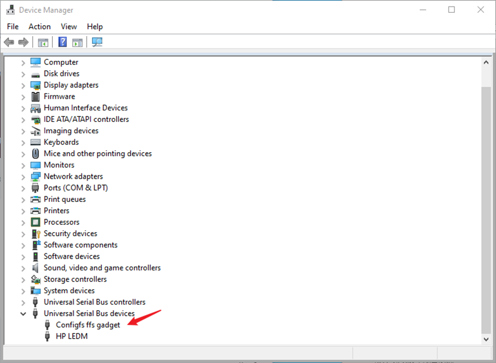
Host mode:
1. After booting the development board, connect a USB drive to the OTG interface using a Type-C to Type-A cable;
Serial port information:
[ 35.270836] sunxi:sunxi_usbc:[INFO]: insmod_host_driver
[ 35.270836]
[ 35.270851] sunxi:ehci_sunxi:[INFO]: [ehci0-controller]: sunxi_usb_enable_ehci
[ 35.270862] sunxi:ehci_sunxi:[INFO]: [sunxi-ehci0]: probe, pdev->name: 4201000.ehci0-controller, sunxi_ehci: 0xc1206388, 0x:d137f000, irq_no:3f
[ 35.271071] sunxi-ehci 4201000.ehci0-controller: supply hci not found, using dummy regulator
[ 35.272420] sunxi-ehci 4201000.ehci0-controller: EHCI Host Controller
[ 35.272463] sunxi-ehci 4201000.ehci0-controller: new USB bus registered, assigned bus number 3
[ 35.272976] sunxi-ehci 4201000.ehci0-controller: irq 63, io mem 0x04201000
[ 35.300845] sunxi-ehci 4201000.ehci0-controller: USB 2.0 started, EHCI 1.00
[ 35.301028] usb usb3: New USB device found, idVendor=1d6b, idProduct=0002, bcdDevice= 5.10
[ 35.301035] usb usb3: New USB device strings: Mfr=3, Product=2, SerialNumber=1
[ 35.301041] usb usb3: Product: EHCI Host Controller
[ 35.301046] usb usb3: Manufacturer: Linux 5.10.198 ehci_hcd
[ 35.301050] usb usb3: SerialNumber: sunxi-ehci
[ 35.301575] hub 3-0:1.0: USB hub found
[ 35.301617] hub 3-0:1.0: 1 port detected
[ 35.301996] sunxi:ohci_sunxi:[INFO]: [ohci0-controller]: sunxi_usb_enable_ohci
[ 35.302009] sunxi:ohci_sunxi:[INFO]: [sunxi-ohci0]: probe, pdev->name: 4201400.ohci0-controller, sunxi_ohci: 0xc1206b80
[ 35.302193] sunxi-ohci 4201400.ohci0-controller: supply hci not found, using dummy regulator
[ 35.302390] sunxi-ohci 4201400.ohci0-controller: OHCI Host Controller
[ 35.302417] sunxi-ohci 4201400.ohci0-controller: new USB bus registered, assigned bus number 4
[ 35.303608] debugfs: Directory 'sunxi-ohci' with parent 'ohci' already present!
[ 35.311861] sunxi-ohci 4201400.ohci0-controller: irq 64, io mem 0x04201400
[ 35.384956] usb usb4: New USB device found, idVendor=1d6b, idProduct=0001, bcdDevice= 5.10
[ 35.384968] usb usb4: New USB device strings: Mfr=3, Product=2, SerialNumber=1
[ 35.384973] usb usb4: Product: OHCI Host Controller
[ 35.384978] usb usb4: Manufacturer: Linux 5.10.198 ohci_hcd
[ 35.384983] usb usb4: SerialNumber: sunxi-ohci
[ 35.385511] hub 4-0:1.0: USB hub found
[ 35.385548] hub 4-0:1.0: 1 port detected
[ 35.620830] usb 3-1: new high-speed USB device number 2 using sunxi-ehci
[ 35.823668] usb 3-1: New USB device found, idVendor=05e3, idProduct=0747, bcdDevice= 8.19
[ 35.823678] usb 3-1: New USB device strings: Mfr=3, Product=4, SerialNumber=5
[ 35.823684] usb 3-1: Product: USB Storage
[ 35.823689] usb 3-1: Manufacturer: Generic
[ 35.823694] usb 3-1: SerialNumber: 000000000819
[ 35.824568] usb-storage 3-1:1.0: USB Mass Storage device detected
[ 35.825185] scsi host0: usb-storage 3-1:1.0
2. Check the mount directory:
root@OKT153:/# ls /run/media/
mmcblk0p1 mmcblk0p6 sda1
sda1 represents the first partition of the first inserted USB storage device, and so on.
3. Check USB drive contents:
root@OKT153:/# ls -l /run/media/sda1
total 8
drwxrwx--- 2 root disk 8192 Sep 23 2021 'System Volume Information'
-rwxrwx--- 1 root disk 0 Apr 25 09:25 test
4. Write test. Write speed is limited by the specific storage device:
root@OKT153:/# dd if=/dev/zero of=/run/media/sda1/test bs=1M count=500 conv=fsync
500+0 records in
500+0 records out
524288000 bytes (524 MB, 500 MiB) copied, 59.8545 s, 8.8 MB/s
5. Read test:
Note: To ensure the accuracy of the data, please restart the development board to test the reading speed.
root@OKT153:/# dd if=/run/media/sda1/test of=/dev/null bs=1M count=500
500+0 records in
500+0 records out
524288000 bytes (524 MB, 500 MiB) copied, 18.2891 s, 28.7 MB/s
6. After using the USB drive, use umount to unmount it before unplugging:
root@OKT153:/# umount /run/media/sda1
4.17 Ethernet Configuration
The OKT153-S features an onboard gigabit network card. When connected to the network via a network cable, the gigabit network card is configured with a static IP address of 192.168.0.232 by default at the factory. The network cards on OKT153-S can be configured via the /etc/network/interfaces configuration file.
4.17.1 Gigabit Ethernet Static IP Method
Note: The Gigabit Ethernet card in the kernel is eth0, with a default IP of 192.168.0.232.
After the development board powers on and boots normally, execute the following command to open the network configuration file /etc/network/interfaces:
root@OKT153:/# vi /etc/network/interfaces
Content is as follows (there may be slight differences after software version updates; refer to actual information):
iface: Specifies the network interface requiring a static IP.
address: Specifies the IP address to be fixed.
netmask: Sets the subnet mask.
gateway: Specifies the gateway.
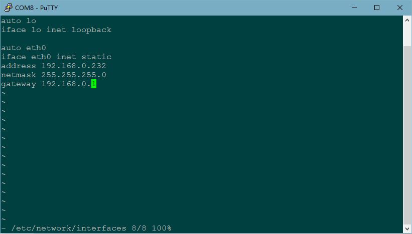
After configuring according to actual needs, save and exit. Use sync to synchronize. The configuration will only take effect after restarting the development board or executing ip addr flush dev eth0 to clear the network card IP, followed by ifdown -a and ifup -a to restart the configuration.
4.17.2 Automatic IP Acquisition
After the development board powers on and boots normally, execute the following command to open the network configuration file /etc/network/interfaces:
root@OKT153:/# vi /etc/network/interfaces
Remove the address, netmask, and gateway attributes, and modify them as follows:
# interface file auto-generated by buildroot
auto lo
iface lo inet loopback
auto eth0
iface eth0 inet dhcp
After saving and exiting, use “sync” to synchronize. The configuration file will take effect after restarting the development board.
4.17.3 Testing Ethernet Speed
Note:
Testing communication speed between the development board and a computer requires that the computer and development board can communicate normally;
This test assumes that the iperf3 tool is already installed on Windows.
Use the network speed testing tool iperf3 to test the network speed of the OKT153 carrier board eth0.
Run iperf3 in server mode in the Windows cmd terminal: The IP for eth0 on the development board is 192.168.1.11, and the Windows PC IP is 192.168.1.39. Enter the following in the OK153 serial debugging terminal:
D:\iperf-3.1.3-win64\iperf-3.1.3-win64>iperf3.exe -s
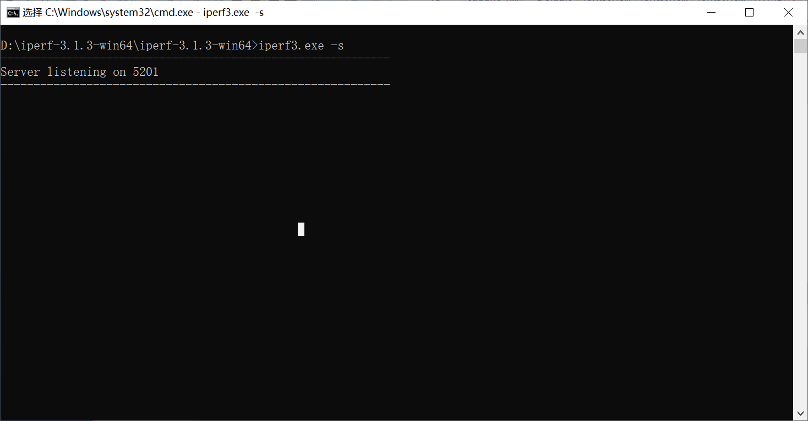
root@OKT153:/# iperf3 -c 192.168.1.213 //Please fill in the server IP address according to the actual situation.
Connecting to host 192.168.1.213, port 5201
[ 5] local 192.168.1.36 port 38260 connected to 192.168.1.213 port 5201
[ ID] Interval Transfer Bitrate Retr Cwnd
[ 5] 0.00-1.00 sec 113 MBytes 946 Mbits/sec 0 307 KBytes
[ 5] 1.00-2.00 sec 112 MBytes 941 Mbits/sec 0 307 KBytes
[ 5] 2.00-3.00 sec 112 MBytes 943 Mbits/sec 0 307 KBytes
[ 5] 3.00-4.00 sec 112 MBytes 941 Mbits/sec 0 307 KBytes
[ 5] 4.00-5.00 sec 112 MBytes 943 Mbits/sec 0 307 KBytes
[ 5] 5.00-6.00 sec 112 MBytes 941 Mbits/sec 0 307 KBytes
[ 5] 6.00-7.00 sec 112 MBytes 941 Mbits/sec 0 303 KBytes
[ 5] 7.00-8.00 sec 112 MBytes 940 Mbits/sec 0 308 KBytes
[ 5] 8.00-9.00 sec 112 MBytes 941 Mbits/sec 0 310 KBytes
[ 5] 9.00-10.00 sec 112 MBytes 943 Mbits/sec 0 313 KBytes
- - - - - - - - - - - - - - - - - - - - - - - - -
[ ID] Interval Transfer Bitrate Retr
[ 5] 0.00-10.00 sec 1.10 GBytes 942 Mbits/sec sender
[ 5] 0.00-10.04 sec 1.10 GBytes 938 Mbits/sec receiver
root@ece33336930b:/mnt# iperf3 -s
-----------------------------------------------------------
Server listening on 5201
-----------------------------------------------------------
Accepted connection from 192.168.1.36, port 38254
[ 5] local 192.168.1.213 port 5201 connected to 192.168.1.36 port 38260
[ ID] Interval Transfer Bitrate
[ 5] 0.00-1.00 sec 107 MBytes 901 Mbits/sec
[ 5] 1.00-2.00 sec 112 MBytes 941 Mbits/sec
[ 5] 2.00-3.00 sec 112 MBytes 942 Mbits/sec
[ 5] 3.00-4.00 sec 112 MBytes 942 Mbits/sec
[ 5] 4.00-5.00 sec 112 MBytes 941 Mbits/sec
[ 5] 5.00-6.00 sec 112 MBytes 942 Mbits/sec
[ 5] 6.00-7.00 sec 112 MBytes 941 Mbits/sec
[ 5] 7.00-8.00 sec 112 MBytes 942 Mbits/sec
[ 5] 8.00-9.00 sec 112 MBytes 942 Mbits/sec
[ 5] 9.00-10.00 sec 112 MBytes 941 Mbits/sec
[ 5] 10.00-10.04 sec 4.88 MBytes 940 Mbits/sec
- - - - - - - - - - - - - - - - - - - - - - - - -
[ ID] Interval Transfer Bitrate
[ 5] 0.00-10.04 sec 1.10 GBytes 938 Mbits/sec receiver
-----------------------------------------------------------
Server listening on 5201
-----------------------------------------------------------
OKT153-S Gigabit Ethernet: 940Mbps upload bandwidth, 940Mbps download bandwidth.
4.18 Network Services
Note:
The default IP for eth0 is 192.168.0.232;
Web services are only available in the eMMC version.
4.18.1 Web Service
Note: The PC’s IP must be in the same subnet as the development board’s IP for normal operation.
The OKT153-S development board comes pre-installed with the lighttpd web server, which is configured to start automatically at system boot.
To access the web interface:
Open a web browser on a computer connected to the same network as the development board.
Enter the IP address of the development board in the browser’s address bar.
This will load the web pages served by the board’s web server, as illustrated below:
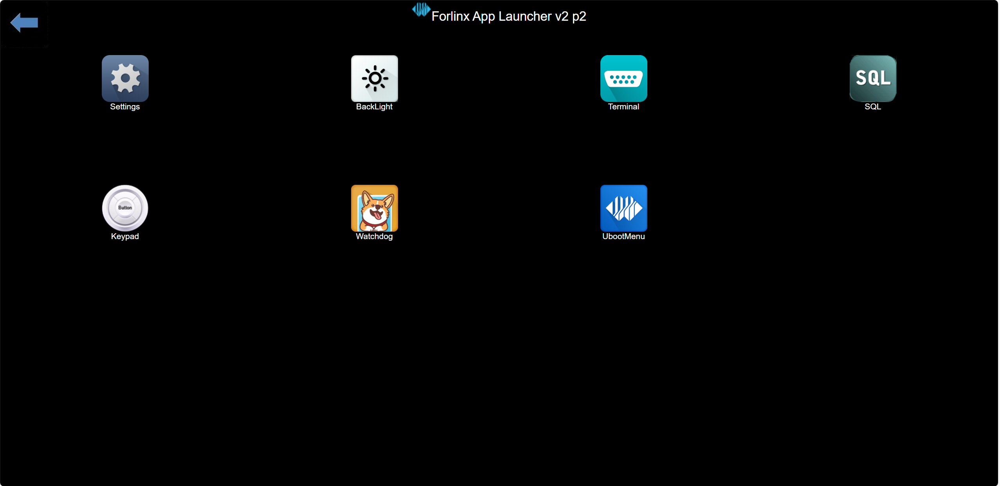
4.18.2 SFTP
Installation package path: User profile\3-tools\FileZilla*
The OKT153-S development board supports SFTP service, which is automatically enabled at system startup. Once the IP address is configured, it can function as an SFTP server. The following describes how to utilize the SFTP tool for file transfer.
Install the FileZilla tool on Windows and set it up as shown in the figure below.
Open the filezilla tool, click File, and select Site Manager.
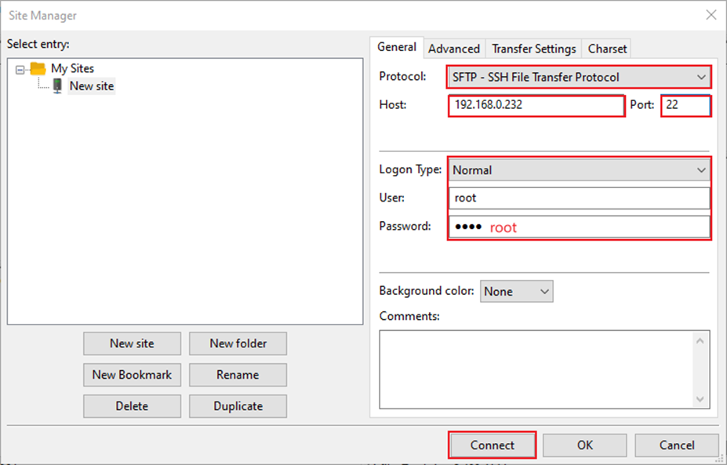
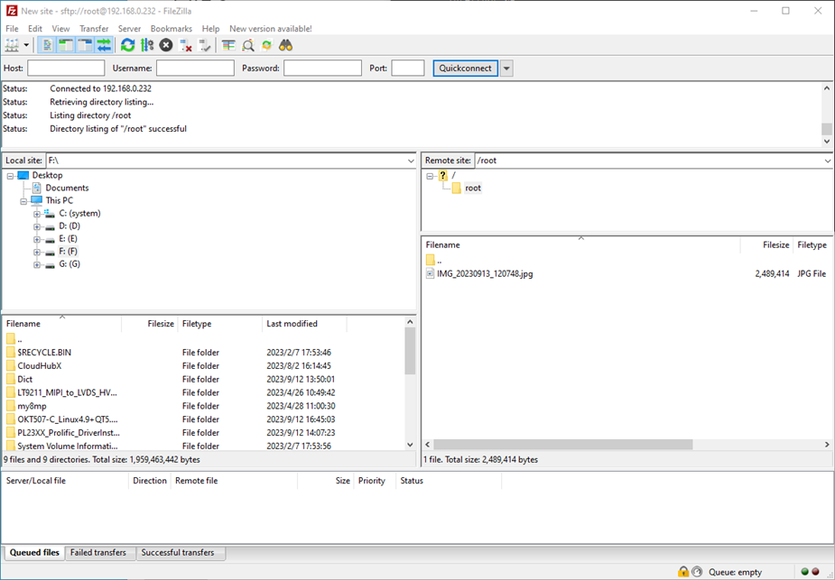
After successful login, upload and download operations can be performed.
4.19 WiFi Test
4.19.1 STA Modes
Note: Due to varying network environments, please configure according to your actual situation when conducting this experiment.
This mode acts as a station to connect to the wireless network. In the following test, the router uses WPA encryption, and the connected Wi-Fi: Name: H3C_708 and password: 123456785. Due to varying network environments, please configure according to your actual situation during this test.
1. Enter the following command in the development board terminal:
The meanings of relevant parameters in the command are as follows:
Parameter |
Meaning |
|---|---|
-i |
Wireless network card node name |
-s |
The actual Wi-Fi hotspot name to connect to. |
-p |
The parameter following -p refers to the password of the actual Wi-Fi hotspot to connect to; if the hotspot has no password, write NONE after -p. |
Serial port prints as follows:
root@OKT153:/# fltest_wifi.sh -i wlan0 -s forlinx-office -p bjfl123456785.
wifi wlan0
ssid forlinx-office
pasw bjfl123456785.
waiting...
udhcpc: started, v1.35.0
udhcpc: broadcasting discover
udhcpc: broadcasting select for 192.168.1.14, server 192.168.1.1
udhcpc: lease of 192.168.1.14 obtained from 192.168.1.1, lease time 21600
deleting routers
adding dns 192.168.1.1
connect ok
2. Check whether you can ping an external network. Enter the following command in the terminal:
root@OKT153:/root# ping -I wlan0 www.baidu.com -c 3
PING www.baidu.com (220.181.111.1): 56 data bytes
64 bytes from 220.181.111.1: seq=0 ttl=52 time=14.674 ms
64 bytes from 220.181.111.1: seq=1 ttl=52 time=8.955 ms
64 bytes from 220.181.111.1: seq=2 ttl=52 time=5.877 ms
--- www.baidu.com ping statistics ---
3 packets transmitted, 3 packets received, 0% packet loss
round-trip min/avg/max = 5.877/9.835/14.674 ms
4.19.2 AP Mode
Note: Before testing, ensure the Gigabit Ethernet interface (eth0) is connected and the network is functioning properly.
Configure hotspot
WiFi hotspot: OKT153_WIFI_5G_AP
WiFi password:12345678
Password:12345678
The hotspot name and password can be found in the /etc/hostapd-5g.conf file.
root@OKT153:/# fltest_hostap.sh
done!
interface state UNINITIALIZED->COUNTRY_UPDATE
wlan0: interface state COUNTRY_UPDATE->ENABLED
wlan0: AP-ENABLED
wlan0: STA a2:2d:9f:bf:0f:c8 IEEE 802.11: associated
wlan0: AP-STA-CONNECTED a2:2d:9f:bf:0f:c8
wlan0: STA a2:2d:9f:bf:0f:c8 WPA: pairwise key handshake completed (RSN)
wlan0: EAPOL-4WAY-HS-COMPLETED a2:2d:9f:bf:0f:c8
Then you can see the WiFi name OKT153_WIFI_5G_AP and the password 12345678 on your phone.
Enter the password to connect.
4.20 4G Test
Note: The driver supports the Quectel EC20 4G module.
The OKT153-S supports a 4G module. Before starting the development board, connect the 4G module (do not hot-plug), install the 4G antenna, insert the SIM card, start the development board, and perform dial-up internet access on the EC20.
4.20.1 EC20 Module Test
Note:
When using an IoT card for testing, confirm the module firmware version; lower versions may not support it and require an upgrade of the EC20 firmware;
Some IoT cards require a dedicated account and password for dial-up; please adjust the command based on your actual situation;
You can use the quectelCM –help command to view the meanings of related parameters.
1. After connecting the module and powering on the development board and module, you can check the USB status using the lsusb command.
root@OKT153:/# lsusb
Bus 001 Device 001: ID 1d6b:0002
Bus 001 Device 005: ID 2c7c:0125 //EC20
Bus 001 Device 002: ID 1a40:0101
Bus 002 Device 001: ID 1d6b:0001
Bus 001 Device 003: ID 0bda:d723
Check the device node status under /dev.
root@OKT153:/# ls /dev/ttyUSB*
/dev/ttyUSB0 /dev/ttyUSB1 /dev/ttyUSB2 /dev/ttyUSB3
2. After successful device identification, you can perform dial-up Internet access testing;
root@OKT153:/# fltest_quectel.sh &
Print information as follows:
[10-14_10:28:06:667] Quectel_QConnectManager_Linux_V1.6.0.15
[10-14_10:28:06:668] Find /sys/bus/usb/devices/2-1 idVendor=0x2c7c idProduct=0x1 25, bus=0x002, dev=0x002
[10-14_10:28:06:668] Auto find qmichannel = /dev/cdc-wdm0
[10-14_10:28:06:668] Auto find usbnet_adapter = wwan0
[10-14_10:28:06:669] netcard driver = qmi_wwan_q, driver version = 22-Aug-2005
[10-14_10:28:06:669] ioctl(0x89f3, qmap_settings) failed: Operation not supporte d, rc=-1
[10-14_10:28:06:669] Modem works in QMI mode
[10-14_10:28:06:680] cdc_wdm_fd = 7
[10-14_10:28:06:772] Get clientWDS = 18
[10-14_10:28:06:803] Get clientDMS = 1
[10-14_10:28:06:835] Get clientNAS = 3
[10-14_10:28:06:867] Get clientUIM = 1
[10-14_10:28:06:899] Get clientWDA = 1
[10-14_10:28:06:931] requestBaseBandVersion EC20CEHCR06A03M1G
//The version number printed is 3Mxx, which does not support IoT cards; only version 5Mxx does.
[10-14_10:28:07:059] requestGetSIMStatus SIMStatus: SIM_READY
[10-14_10:28:07:091] requestGetProfile[1] 3gnet///0
[10-14_10:28:07:123] requestRegistrationState2 MCC: 460, MNC: 1, PS: Attached, D ataCap: LTE
[10-14_10:28:07:155] requestQueryDataCall IPv4ConnectionStatus: DISCONNECTED
[10-14_10:28:07:155] ifconfig wwan0 0.0.0.0
[10-14_10:28:07:163] ifconfig wwan0 down
[10-14_10:28:07:219] requestSetupDataCall WdsConnectionIPv4Handle: 0x86ac9e70
[10-14_10:28:07:347] ifconfig wwan0 up
[10-14_10:28:07:356] udhcpc -f -n -q -t 5 -i wwan0
udhcpc: started, v1.29.3
udhcpc: sending discover
udhcpc: sending select for 10.203.238.118
udhcpc: lease of 10.203.238.118 obtained, lease time 7200
[10-14_10:28:07:528] deleting routers
[10-14_10:28:07:556] adding dns 202.99.160.68
[10-14_10:28:07:556] adding dns 202.99.166.4
If an IP is automatically assigned and DNS is added, the EC20 dial-up is successful.
3. After successful dial-up, check the network node via ifconfig as usb0 (the node name may vary; refer to the actual situation), and test network status via the ping command.
root@OKT153:/# ping -I usb0 www.forlinx.com
PING www.forlinx.com (211.149.226.120): 56 data bytes
64 bytes from 211.149.226.120: seq=0 ttl=51 time=64.882 ms
64 bytes from 211.149.226.120: seq=1 ttl=51 time=64.636 ms
64 bytes from 211.149.226.120: seq=2 ttl=51 time=63.331 ms
^C /Use Ctrl+C to terminate the ping process here.
--- www.forlinx.com ping statistics ---
3 packets transmitted, 3 packets received, 0% packet loss
round-trip min/avg/max = 63.331/64.283/64.882 ms
4.21 Playback/Recording Test
Note: The OKT153-S is features 1 x 3.5mm audio interface, and 2 x Xh-2.54mm speaker interfaces.
First, check the currently supported audio playback devices.
root@OKT153:/root# aplay -l
**** List of PLAYBACK Hardware Devices ****
card 0: audiocodec [audiocodec], device 0: sunxi-snd-plat-aaudio-sunxi-snd-codec 2030000.codec-0 []
Subdevices: 1/1
Subdevice #0: subdevice #0
card 1: sndi2s1 [sndi2s1], device 0: sunxi-snd-plat-i2s-nau8822-hifi nau8822-hifi-0 []
Subdevices: 1/1
Subdevice #0: subdevice #0
Plug in the headphone for playing the audio.
root@OKT153:/# gst-launch-1.0 filesrc location=/forlinx/test.mp3 ! id3demux ! mpegaudioparse ! mpg123audiodec ! alsasink device=hw:1,0
Plug in the speaker for playing the audio.
root@OKT153:/# gst-play-1.0 /forlinx/test.mp3
Recording test:
Use the dual-channel recording interface of device 1 to record and play the recording file.
root@OKT153:/root# arecord -D hw:1,0 -f cd -t wav -d 5 test.wav
Recording WAVE 'test.wav' : Signed 16 bit Little Endian, Rate 44100 Hz, Stereo
root@OKT153:/root# aplay -D hw:1,0 test.wav
Playing WAVE 'test.wav' : Signed 16 bit Little Endian, Rate 44100 Hz, Stereo
4.22 LCD Backlight Adjustment
The brightness range for the backlight is (0–255), where 255 indicates the highest brightness and 0 turns off the backlight. Enter the following command in the terminal after system startup for backlight testing.
1. Check the current screen backlight value:
root@OKT153:/# cat /sys/class/backlight/backlight0/brightness
200 //The default backlight value is set to 200.
2. Turn off the backlight:
root@OKT153:/# echo 0 > /sys/class/backlight/backlight0/brightness //Turn off the backlight
3. Turn on the LCD backlight:
root@OKT153:/# echo 125 > /sys/class/backlight/backlight0/brightness //Set the backlight value to 125.
root@OKT153:/# cat /sys/class/backlight/backlight0/brightness
125 //Backlight modification successful
4.23 Closing Desktop
Note: The Nand version is without desktop.
root@OKT153:/# /etc/init.d/S42matrix-browser stop //Turn off the desktop
4.24 LED Test
There are two controllable rgb-led lights on the SoM, two controllable yellow user-led lights, and one blue heartbeat-led light
4.24.1 USER-LED Test
Testing Procedure:
root@OKT153:/# echo 1 > /sys/class/leds/user0/brightness //Turn on user0 light
root@OKT153:/# echo 0 > /sys/class/leds/user0/brightness //Turn off user0 light
root@OKT153:/# echo 1 > /sys/class/leds/user1/brightness //Turn on user1 light
root@OKT153:/# echo 0 > /sys/class/leds/user1/brightness //Turn off user1 light
The usr0 represents user-led0 and usr1 represents user-led1.
4.24.2 Heartbeat-LED Test
Testing Procedure:
1. View the trigger condition
root@OKT153:/# cat /sys/class/leds/heartbeat/trigger
none rc-feedback rfkill-any rfkill-none kbd-scrolllock kbd-numlock kbd-capslock
kbd-kanalock kbd-shiftlock kbd-altgrlock kbd-ctrllock kbd-altlock kbd-shiftllock kbd-shiftrlock kbd-ctrlllock kbd-ctrlrlock mmc0 mmc1 [heartbeat] rfkill0
Here, [heartbeat] indicates the current trigger condition is the system heartbeat light. Writing the above string to trigger can modify the trigger condition.
2. User control
When the LED trigger condition is set to none, you can control the LED on/off via commands.
root@OKT153:/# echo none > /sys/class/leds/heartbeat/trigger
root@OKT153:/# echo 1 > /sys/class/leds/heartbeat/brightness
root@OKT153:/# echo 0 > /sys/class/leds/heartbeat/brightness
3. Change the blue LED to heartbeat mode
root@OKT153:/# echo heartbeat > /sys/class/leds/heartbeat/trigger
The LED is now controlled by the system clock, flashing in a certain rhythm.
4.24.3 RGB-LED Test
Testing Procedure:
root@OKT153:/# echo 100 > /sys/class/leds/sunxi_led0r/brightness
root@OKT153:/# echo 100 > /sys/class/leds/sunxi_led0g/brightness
root@OKT153:/# echo 100 > /sys/class/leds/sunxi_led0b/brightness
root@OKT153:/# echo 100 > /sys/class/leds/sunxi_led1r/brightness
root@OKT153:/# echo 100 > /sys/class/leds/sunxi_led1g/brightness
root@OKT153:/# echo 100 > /sys/class/leds/sunxi_led1b/brightness
sunxi_led0b represents blue in rgb 0-led mode, sunxi_led0g represents green in rgb 0-led mode, sunxi_led0r represents red in rgb 0-led mode, sunxi_led1b represents blue in rgb1-led mode, sunxi_led1g represents green in rgb1-led mode, and sunxi_led1r represents red in rgb1-led mode.
rgb0 represents rgb0-led.
4.25 SQLite3 Test
SQLite3 is a lightweight database system, an ACID-compliant relational database management system with low resource consumption. The OKT153-S development board uses version 3.38.5 of SQLite3.
root@OKT153:/# sqlite3
SQLite version 3.38.5 2022-05-06 15:25:27
Enter ".help" for usage hints.
Connected to a transient in-memory database.
Use ".open FILENAME" to reopen on a persistent database
sqlite> create table tbl1 (one varchar(10), two smallint); //Create table tbl1
sqlite> insert into tbl1 values('hello!',10); //Insert data into table tbl1 hello!|10
sqlite> insert into tbl1 values('goodbye', 20); //Insert data into table tbl1 goodbye|20
sqlite> select * from tbl1; //Query the contents of table tbl1
hello!|10
goodbye|20
sqlite> delete from tbl1 where one = 'hello!'; //Delete data
sqlite> select * from tbl1; //Query the contents of table tbl1
goodbye|20
sqlite> .quit //Exit the database (or use the .exit command).
root@OKT153:/#
4.26 Adding a Startup Script
4.26.1 Temporarily Adding a Startup Script
1. First, create a shell script:
root@OKT153:/# vi /etc/autorun.sh
Modify the file reference as follows (users need to modify according to their actual situation):

2. After modification, save and exit, then add execution permission to the script;
root@OKT153:/# chmod +x /etc/autorun.sh
3. Add the following at the end of the /etc/init.d/rcS file:
/etc/autorun.sh &
Save the changes and exit.
4.26.2 Adding a Startup Script to the Flashing Image
To add a startup script when flashing the image, modifications need to be made in the development environment source code. The operation method is as follows:
1. Enter the OKT153-linux-sdk source code package and create a shell script in the path: OKT153-linux-sdk/buildroot/buildroot-202205/board/forlinx/fs-overlays/etc;
2. The format is as follows; you can modify it according to your actual needs:
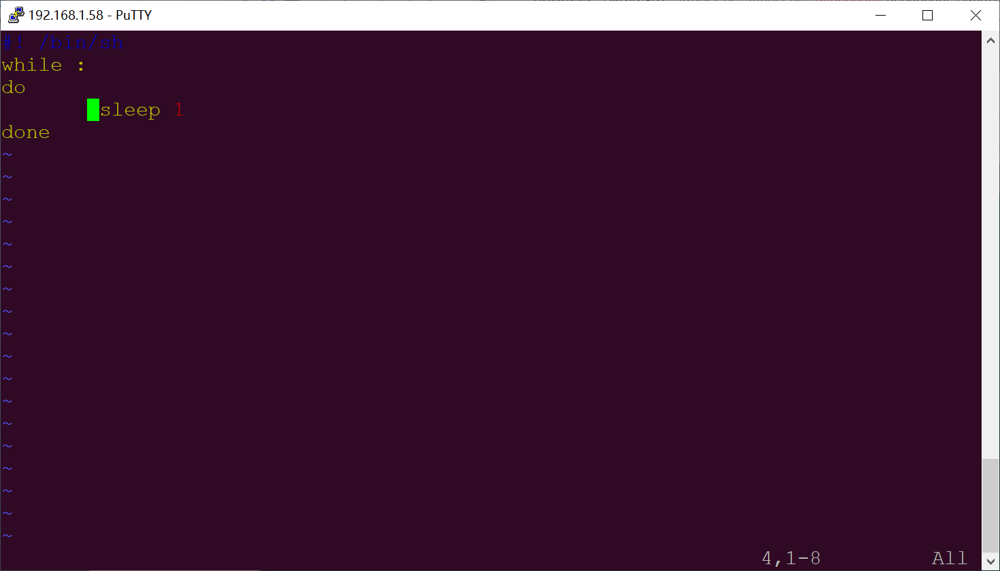
3. Use the command chmod +x autorun.sh to add execute permissions to the file;
Add the newly created shell script to the rcS file in the OKT153-S root file system;
The rcS file is located in the source package path: OKT153-linux-sdk/buildroot/buildroot-202205/board/forlinx/fs-overlay/etc/init.d/rcS.
Add a shell statement to the end of the rcS file: /etc/autorun.sh &.
4. Recompile and package
Please refer to the “OKT153-S_Linux5.10.198+Qt5.15.8 User Compilation Manual” for further details.
4.27 View Chip-ID
Input in the serial debugging terminal:
root@OKT153:/# cat /sys/class/sunxi_info/sys_info
sunxi_platform : T153
sunxi_secure : normal
sunxi_serial : 5471288300c722740000980000000000
sunxi_chiptype : 00000000
sunxi_batchno : 0x19220000
sunxi_soc_ver : 0x0
4.28 CAN Test
There are 2 x CAN2.0A/ B led out and connected to P26 socket.
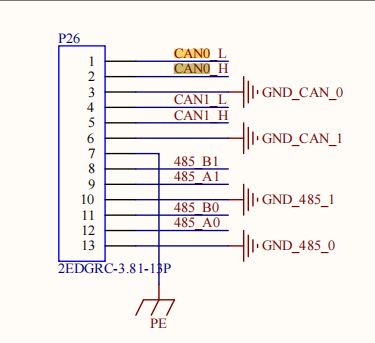
Short-circuit H, L, and GND of can0 and can1 respectively to perform the test.
4.28 CAN Modes
Start CAN service.
root@OKT153:/# ip link set can0 up type can bitrate 500000
[58659.636796] IPv6: ADDRCONF(NETDEV_CHANGE): can0: link becomes ready
root@OKT153:/# ip link set can1 up type can bitrate 500000
[58662.966792] IPv6: ADDRCONF(NETDEV_CHANGE): can1: link becomes ready
root@OKT153:/# ip link set dev can0 txqueuelen 4096
root@OKT153:/# ip link set dev can1 txqueuelen 4096
Configure CAN0 to receive and CAN1 to send.
root@OKT153:/# candump can0 &
[1] 18633
root@OKT153:/# cangen can1
can0 712 [8] 6A 49 73 7D 85 DF EC 17
can0 70E [8] 6F F8 6B 21 BF ED AD 5E
can0 281 [8] CB 51 DB 37 1D 81 C4 07
can0 2A0 [8] 31 29 7A 03 B4 B3 6A 7D
can0 7DB [8] A7 75 76 56 FF CA 50 3C
can0 542 [4] 0F 25 05 78
can0 4D8 [2] 6F 82
can0 1DF [8] CA 3F C2 72 F2 48 23 2C
can0 5F1 [5] 77 28 10 44 FF
can0 37F [6] BE DA 19 30 00 C6
can0 140 [8] 1D 47 B9 35 E0 D3 D6 5C
can0 062 [8] 94 87 41 5A 3D A8 D6 58
can0 35B [8] 3C 73 27 15 9D 08 9E 5A
can0 1A0 [8] CA D5 4D 41 78 5E 55 77
4.28.2 CANFD Mode
Start CAN service.
root@OKT153:/# ip link set can0 up type can bitrate 500000 dbitrate 2000000 fd on
root@OKT153:/# ip link set can1 up type can bitrate 500000 dbitrate 2000000 fd on
Configure CAN0 to receive and CAN1 to send.
root@OKT153:/# candump can0 &
[1] 406
root@OKT153:/# cangen -f can1
can0 466 [08] A8 00 A2 58 9F B4 C6 5E
can0 1F4 [48] 97 26 2E 46 81 13 ED 07 97 26 2E 46 81 13 ED 07 97 26 2E 46 81 13 ED 07 97 26 2E 46 81 13 ED 07 97 26 2E 46 81 13 ED 07 97 26 2E 46 81 13 ED 07
can0 0E0 [48] D7 14 78 1E 7B 70 BC 37 D7 14 78 1E 7B 70 BC 37 D7 14 78 1E 7B 70 BC 37 D7 14 78 1E 7B 70 BC 37 D7 14 78 1E 7B 70 BC 37 D7 14 78 1E 7B 70 BC 37
can0 746 [12] DA EC EF 25 92 76 8B 1B DA EC EF 25
can0 768 [07] 27 EA 63 47 A2 32 8E
can0 7EA [16] 2A AE 55 2F 23 0E 6B 3E 2A AE 55 2F 23 0E 6B 3E
can0 3D9 [05] AE EC 99 50 43
can0 1C6 [06] B1 54 35 0E 2C 4E
can0 41E [12] CB 02 C2 01 12 86 7F 6B CB 02 C2 01
can0 447 [02] 93 99
can0 491 [20] A2 05 CC 7F D7 0B 1F 49 A2 05 CC 7F D7 0B 1F 49 A2 05 CC 7F
can0 224 [32] 69 82 AA 64 8C 41 B9 75 69 82 AA 64 8C 41 B9 75 69 82 AA 64 8C 41 B9 75 69 82 AA 64 8C 41 B9 75
can0 364 [01] 2E
can0 25B [08] 71 11 B3 48 34 2E 43 1C
can0 7AD [64] 77 BB 3F 4E 73 B9 FF 09 77 BB 3F 4E 73 B9 FF 09 77 BB 3F 4E 73 B9 FF 09 77 BB 3F 4E 73 B9 FF 09 77 BB 3F 4E 73 B9 FF 09 77 BB 3F 4E 73 B9 FF 09 77 BB 3F 4E 73 B9 FF 09 77 BB 3F 4E 73 B9 FF 09
can0 785 [08] 9F 07 FB 2C A3 5B C2 7A
can0 581 [16] B5 E1 41 66 C8 09 5C 15 B5 E1 41 66 C8 09 5C 15
can0 3CD [12] F0 9E 6B 5D 5E 10 D9 0A F0 9E 6B 5D
can0 1B4 [02] 35 1C
can0 70F [64] 65 F5 5B 36 73 2A 74 57 65 F5 5B 36 73 2A 74 57 65 F5 5B 36 73 2A 74 57 65 F5 5B 36 73 2A 74 57 65 F5 5B 36 73 2A 74 57 65 F5 5B 36 73 2A 74 57 65 F5
4.29 SPI Test
There are three SPI interfaces on the development board: SPI0, SPI2, and SPI3. SPI0 is a NAND flash, SPI2 is a NOR flash, and SPI3 is an encryption module. For testing, the trusted module needs to be removed.
Test by short-circuiting SPI3_MOSI and SPI3_MISO.
root@OKT153:/# fltest_spidev_test -D /dev/spidev3.0 -s 1000000
spi mode: 0
bits per word: 8
max speed: 1000000 Hz (1000 KHz)
FF FF FF FF FF FF
40 00 00 00 00 95
FF FF FF FF FF FF
FF FF FF FF FF FF
FF FF FF FF FF FF
DE AD BE EF BA AD
F0 0D
PASS
4.30 Bluetooth Testing
The development board integrates the RTL8723du WiFi & BT modules.
Use bluez too to test it.
Enable the BlueZ daemon and configure Bluetooth.
root@OKT153:/# bluetoothctl //Open Bluez Bluetooth tool
Agent registered
[CHG] Controller 38:7A:CC:70:7E:5D Pairable: yes
[bluetooth]# power on //Power on Bluetooth device
Changing power on succeeded
[bluetooth]# pairable on //Set to pairing mode
Changing pairable on succeeded
[bluetooth]# discoverable on //Set to discoverable mode
Changing discoverable on succeeded
[CHG] Controller 38:7A:CC:70:7E:5D Discoverable: yes
[bluetooth]# agent on //Start agent
Agent is already registered
[bluetooth]# default-agent //Set the current agent as the default.
Default agent request successful
4.30.1 Passive Pairing
After the above configuration, the Bluetooth device can be detected on your phone. Click on this Bluetooth device to attempt pairing.
The following will be printed on the board: Enter “yes”:
[NEW] Device DC:6A:E7:19:DA:76 Xiaomi 13
Request confirmation
[agent] Confirm passkey 735976 (yes/no): yes
[CHG] Device DC:6A:E7:19:DA:76 Modalias: bluetooth:v038Fp1200d1436
[CHG] Device DC:6A:E7:19:DA:76 UUIDs: 00001105-0000-1000-8000-00805f9b34fb
[CHG] Device DC:6A:E7:19:DA:76 UUIDs: 0000110a-0000-1000-8000-00805f9b34fb
[CHG] Device DC:6A:E7:19:DA:76 UUIDs: 0000110c-0000-1000-8000-00805f9b34fb
[CHG] Device DC:6A:E7:19:DA:76 UUIDs: 0000110e-0000-1000-8000-00805f9b34fb
[CHG] Device DC:6A:E7:19:DA:76 UUIDs: 00001112-0000-1000-8000-00805f9b34fb
[CHG] Device DC:6A:E7:19:DA:76 UUIDs: 00001115-0000-1000-8000-00805f9b34fb
[CHG] Device DC:6A:E7:19:DA:76 UUIDs: 00001116-0000-1000-8000-00805f9b34fb
[CHG] Device DC:6A:E7:19:DA:76 UUIDs: 0000111f-0000-1000-8000-00805f9b34fb
[CHG] Device DC:6A:E7:19:DA:76 UUIDs: 0000112f-0000-1000-8000-00805f9b34fb
[CHG] Device DC:6A:E7:19:DA:76 UUIDs: 00001132-0000-1000-8000-00805f9b34fb
[CHG] Device DC:6A:E7:19:DA:76 UUIDs: 00001200-0000-1000-8000-00805f9b34fb
[CHG] Device DC:6A:E7:19:DA:76 UUIDs: 00001800-0000-1000-8000-00805f9b34fb
[CHG] Device DC:6A:E7:19:DA:76 UUIDs: 00001801-0000-1000-8000-00805f9b34fb
[CHG] Device DC:6A:E7:19:DA:76 UUIDs: 0000fcc0-0000-1000-8000-00805f9b34fb
[CHG] Device DC:6A:E7:19:DA:76 UUIDs: 0000fcc0-36a2-11ea-8467-484d7e99a198
[CHG] Device DC:6A:E7:19:DA:76 UUIDs: 0000fdaa-0000-1000-8000-00805f9b34fb
[CHG] Device DC:6A:E7:19:DA:76 UUIDs: 98b97136-36a2-11ea-8467-484d7e99a198
[CHG] Device DC:6A:E7:19:DA:76 UUIDs: ada499be-27d6-11ec-9427-0a80ff2603de
[CHG] Device DC:6A:E7:19:DA:76 ServicesResolved: yes
[CHG] Device DC:6A:E7:19:DA:76 Paired: yes
[CHG] Device DC:6A:E7:19:DA:76 ServicesResolved: no
[CHG] Device DC:6A:E7:19:DA:76 Connected: no
[CHG] Controller 5C:C5:63:67:56:F9 Discoverable: no
Then, on your phone, tap Bluetooth to pair:
Remove the paired device.
[bluetooth]# devices //View connected devices
Device DC:6A:E7:19:DA:76 Xiaomi 13
[bluetooth]# remove 4C:99:92:6F:BB:E8 //Remove device
[DEL] Device DC:6A:E7:19:DA:76 Xiaomi 13
Device has been removed
The above printout indicates successful removal.
4.30.2 Active Pairing
In addition to passive pairing, it is also possible to send an active pairing request from the development board terminal.
[bluetooth]# scan on //Search for discoverable Bluetooth
Device F8:9E:94:AC:F3:95 LIUSU
Device DC:6A:E7:19:DA:76 Mashiro的Xiaomi 13
Device 6C:EB:82:B8:13:A1 6C-EB-82-B8-13-A1
Device 5A:D0:01:DF:D2:19 DESKTOP-EDODVS1
Device 52:4F:57:71:69:F7 52-4F-57-71-69-F7
Device 79:DA:2E:46:F5:CF 79-DA-2E-46-F5-CF
Device 70:4E:EF:56:83:9C 70-4E-EF-56-83-9C
Device 60:B5:08:EB:BC:05 60-B5-08-EB-BC-05
Device AF:1E:ED:8F:55:9C N/A
Device 2C:DB:07:C7:4F:F6 DESKTOP-VND9V1F
Device 79:AE:DF:DD:2C:40 79-AE-DF-DD-2C-40
[bluetooth]# scan off //Stop searching
[bluetooth]# [ 1337.133251] rtk_btcoex: hci (periodic)inq cancel/exit
Discovery stopped
[CHG] Device DC:6A:E7:19:DA:76 RSSI is nil
[CHG] Device 79:AE:DF:DD:2C:40 TxPower is nil
[CHG] Device 79:AE:DF:DD:2C:40 RSSI is nil
[CHG] Device 2C:DB:07:C7:4F:F6 TxPower is nil
[CHG] Device 2C:DB:07:C7:4F:F6 RSSI is nil
[CHG] Device AF:1E:ED:8F:55:9C RSSI is nil
[CHG] Device 60:B5:08:EB:BC:05 TxPower is nil
[CHG] Device 60:B5:08:EB:BC:05 RSSI is nil
[CHG] Device 70:4E:EF:56:83:9C TxPower is nil
[CHG] Device 70:4E:EF:56:83:9C RSSI is nil
[CHG] Device 79:DA:2E:46:F5:CF RSSI is nil
[CHG] Device 52:4F:57:71:69:F7 TxPower is nil
[CHG] Device 52:4F:57:71:69:F7 RSSI is nil
[CHG] Device F8:9E:94:AC:F3:95 TxPower is nil
[CHG] Device F8:9E:94:AC:F3:95 RSSI is nil
[CHG] Device 5A:D0:01:DF:D2:19 RSSI is nil
[CHG] Device 6C:EB:82:B8:13:A1 RSSI is nil
[CHG] Controller 5C:C5:63:67:56:F9 Discovering: no
[bluetooth]# pair DC:6A:E7:19:DA:76
Attempting to pair with DC:6A:E7:19:DA:76
[CHG] Device DC:6A:E7:19:DA:76 Connected: yes
Request confirmation
At the same time, a pairing request appears on the mobile phone screen. Click to pair, the board prints “yes” and the mobile phone accepts the pairing, displaying the following printout: Pairing successful.
[agent] Confirm passkey 518713 (yes/no): yes
[CHG] Device DC:6A:E7:19:DA:76 Modalias: bluetooth:v038Fp1200d1436
[CHG] Device DC:6A:E7:19:DA:76 UUIDs: 00001105-0000-1000-8000-00805f9b34fb
[CHG] Device DC:6A:E7:19:DA:76 UUIDs: 0000110a-0000-1000-8000-00805f9b34fb
[CHG] Device DC:6A:E7:19:DA:76 UUIDs: 0000110c-0000-1000-8000-00805f9b34fb
[CHG] Device DC:6A:E7:19:DA:76 UUIDs: 0000110e-0000-1000-8000-00805f9b34fb
[CHG] Device DC:6A:E7:19:DA:76 UUIDs: 00001112-0000-1000-8000-00805f9b34fb
[CHG] Device DC:6A:E7:19:DA:76 UUIDs: 00001115-0000-1000-8000-00805f9b34fb
[CHG] Device DC:6A:E7:19:DA:76 UUIDs: 00001116-0000-1000-8000-00805f9b34fb
[CHG] Device DC:6A:E7:19:DA:76 UUIDs: 0000111f-0000-1000-8000-00805f9b34fb
[CHG] Device DC:6A:E7:19:DA:76 UUIDs: 0000112f-0000-1000-8000-00805f9b34fb
[CHG] Device DC:6A:E7:19:DA:76 UUIDs: 00001132-0000-1000-8000-00805f9b34fb
[CHG] Device DC:6A:E7:19:DA:76 UUIDs: 00001200-0000-1000-8000-00805f9b34fb
[CHG] Device DC:6A:E7:19:DA:76 UUIDs: 00001800-0000-1000-8000-00805f9b34fb
[CHG] Device DC:6A:E7:19:DA:76 UUIDs: 00001801-0000-1000-8000-00805f9b34fb
[CHG] Device DC:6A:E7:19:DA:76 UUIDs: 0000fcc0-0000-1000-8000-00805f9b34fb
[CHG] Device DC:6A:E7:19:DA:76 UUIDs: 0000fcc0-36a2-11ea-8467-484d7e99a198
[CHG] Device DC:6A:E7:19:DA:76 UUIDs: 0000fdaa-0000-1000-8000-00805f9b34fb
[CHG] Device DC:6A:E7:19:DA:76 UUIDs: 98b97136-36a2-11ea-8467-484d7e99a198
[CHG] Device DC:6A:E7:19:DA:76 UUIDs: ada499be-27d6-11ec-9427-0a80ff2603de
[CHG] Device DC:6A:E7:19:DA:76 ServicesResolved: yes
[CHG] Device DC:6A:E7:19:DA:76 Paired: yes
Pairing successful
Type quit to exit the command line.
[bluetooth]# quit
4.30.3 File Receiving
Select the file on your phone and choose to send it to the development board via Bluetooth (provided Bluetooth connection is already established).
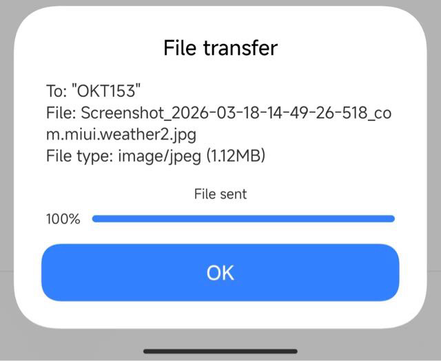
After sending, you can see the sent image file in the /bt_recv directory.
root@OKT153:/# ls /bt_recv/
Screenshot_2025-07-10-10-31-56-173_com.android.settings.jpg
4.30.4 File Sending
root@OKT153:~# obexctl //Start the obexd daemon process
[NEW] Client /org/bluez/obex
[obex]# connect DC:6A:E7:19:DA:76 //Connect Bluetooth devices that require communication
……
[NEW] Session /org/bluez/obex/client/session0 [default]
[NEW] ObjectPush /org/bluez/obex/client/session0
Connection successful
[DC:6A:E7:19:DA:76]# send /bt_recv/Screenshot_2025-07-10-10-31-56-173_com.android.settings.jpg //Send file
Your phone will receive a file transfer notification. Tap to accept and start the transfer; once finished, the image will appear on your phone.
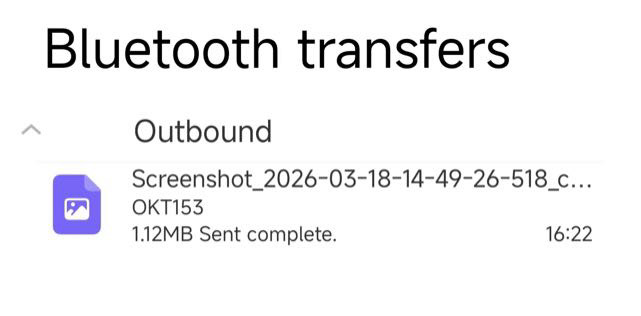
4.31 Camera Test
OK153 supports 2 x 2lane OV5645, while OV5645 only supports 1280x720 resolution acquisition.
The P13 and P15 FPC sockets correspond to the device nodes /dev/video0 and /dev/video4, respectively.
root@OKT153:/# fltest_csimplane 0 0 1280 720
root@OKT153:/# fltest_csimplane 4 0 1280 720
Press Ctrl+C to exit the program. The collected data file is saved in /tmp/data_1280x720.yuv. Copy the file to your PC.
Use YUV Player to view the image using NV21 at 1280x720 resolution.
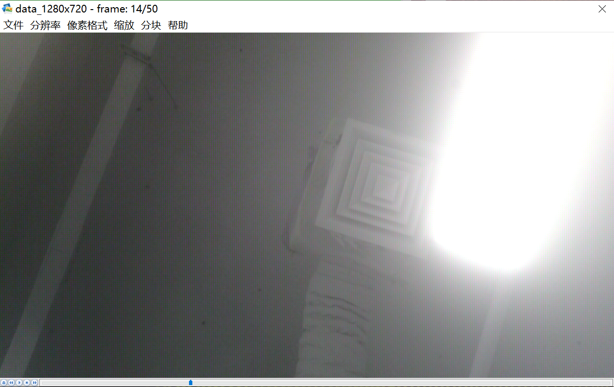
5. System Flashing
The OKT153-S development board supports firmware flashing through both OTG (USB On-The-Go) and TF Card methods. The corresponding flashing tools are included in the user profile provided, allowing you to choose either option for programming the system image.
5.1 Required Images
Image path: User Profile\2-Mirror and Source Code\0-Mirror
Image |
Description |
|---|---|
t153_linux_okt153_uart0.img |
Default factory image for eMMC. |
t153_linux_okt153_uart0_nand.img |
Default factory image for Nand. |
5.2 OTG Flashing
5.2.1 OTG Driver Installation
Note: This driver is a built-in driver for your computer. If your computer cannot install it automatically, please refer to this section for installation instructions.
Driver path: User Data\3-Tools\USBDriver.rar(USBDriver_64.zip)
Extract USBDriver.rar (32-bit system) or USBDriver_64.zip (64-bit system) to your desktop and then extract the files.
Connect the development board and the host using a Type-C cable. Press and hold the FEL button, then press the RESET button to reset the system. Release the RESET button first, and then release the FEL button after about two seconds.
Note: Release RESET first, then release FEL.
Open Windows Device Manager and you’ll find an unknown device with a yellow exclamation mark.
The following interface will appear:
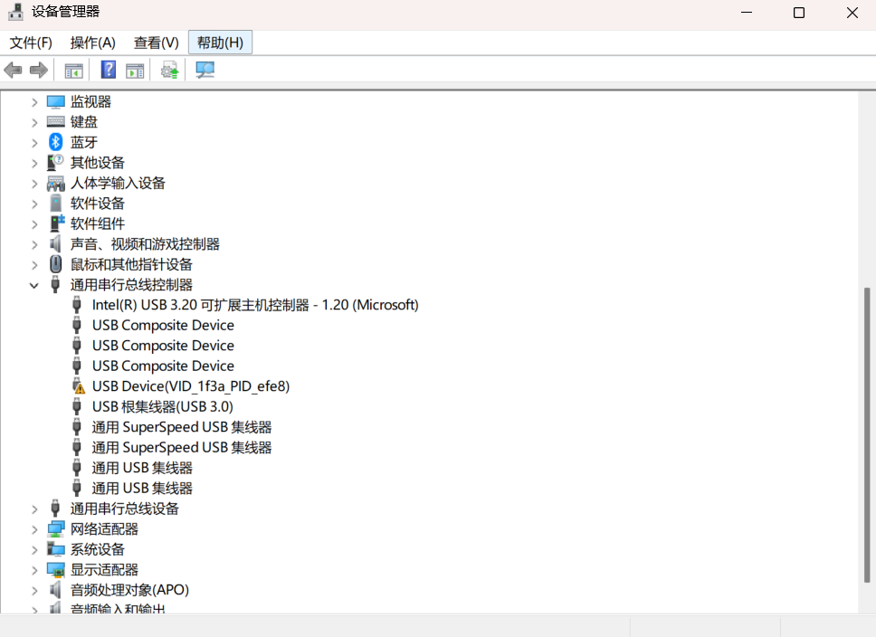
Right-click on “Unknown device” and select “Update driver”.
In the following interface, click “Browse my computer for drivers”.
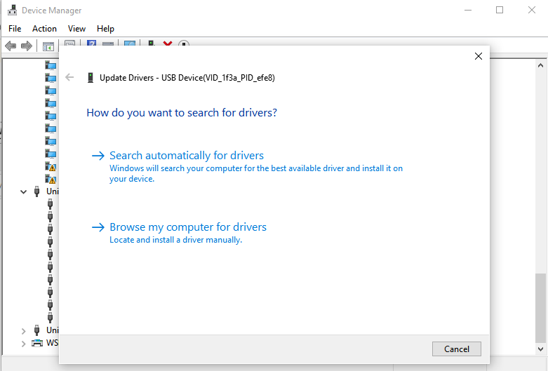
In the following interface, select the USBDriver_64 directory that you just extracted:
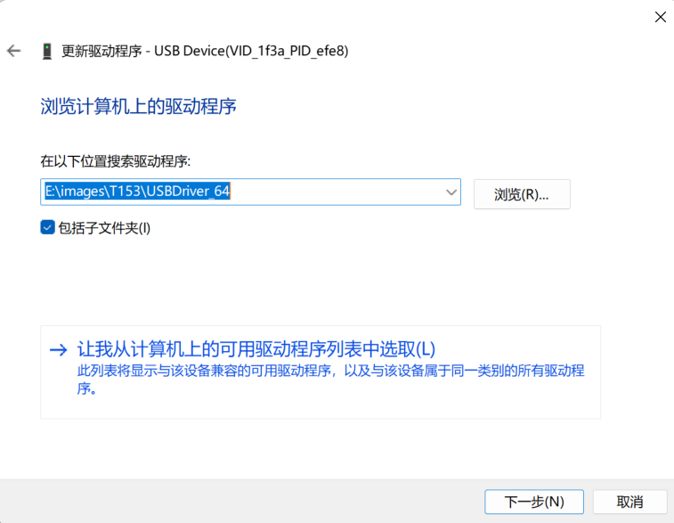
Click “Next” and wait for the driver installation to complete.
The following interface will appear:
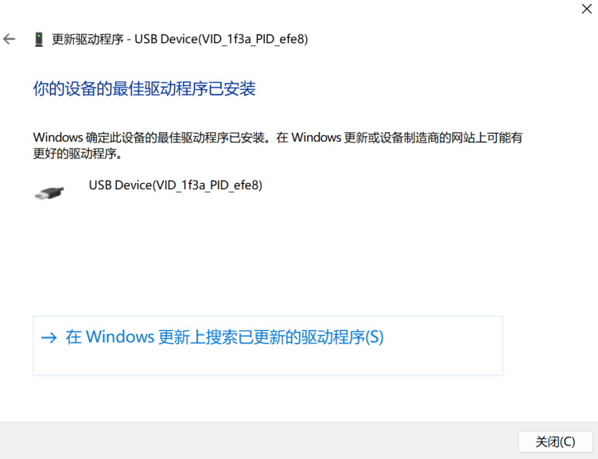
5.2.2 OTG Flashing Methods
The path to the programming tool is: User Profile\3-Tools\PhoenixSuit_CN.msi.
Complete OTG Flashing.
This programming method will program the entire img image.
Copy PhoenixSuit_CN.msi from the User Profile Tools directory to any directory in Windows. Double-click PhoenixSuit_CN.msi to install. The installation process will not be described here. After installation, run PhoenixSuit.exe.
The following interface will appear:
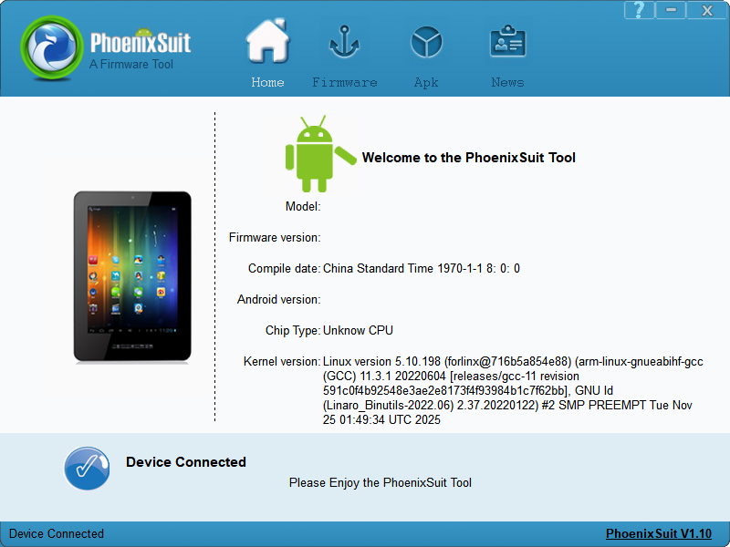
In the following interface, click “One-click Flash” and then click “Browse” to select the firmware image file.

Connect the development board and the host using a Type-A to Type-C cable, power the board, and press and hold the FEL and RESET buttons simultaneously. Release the RESET button first, then release the FEL button.
Note: Release RESET first, then release FEL.
In the following interface, click “Yes” to enter the formatting upgrade mode:
Wait for the flashing to complete.
Then, the following interface will pop up:
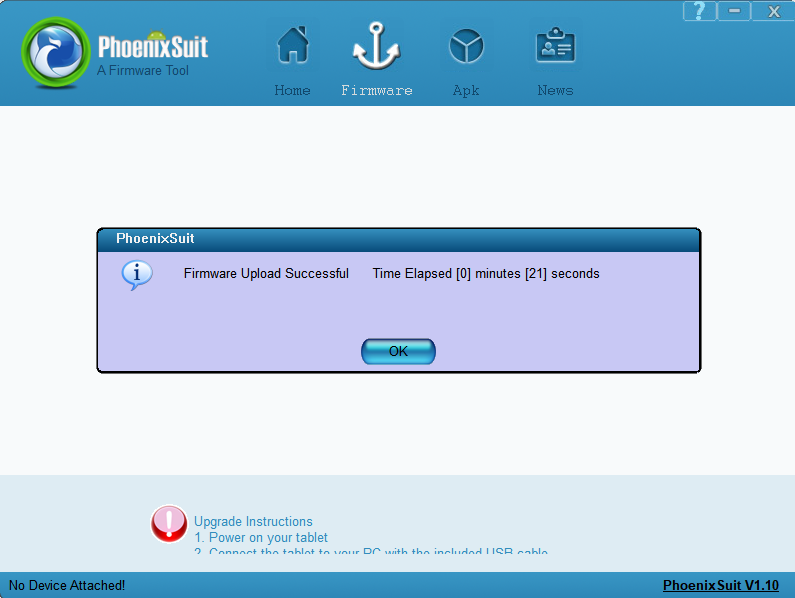
Power on and start the T153 board.
2. Partial Image Updates
1) OTG uboot separate programming test
In the following interface, check the checkbox “Single or multi-partition download (select this option, the flashing tool will download the partitions you have selected)”, then check the “BOOT-RESOURCE”, “ENV”, and “ENV-REDUND” checkboxes.
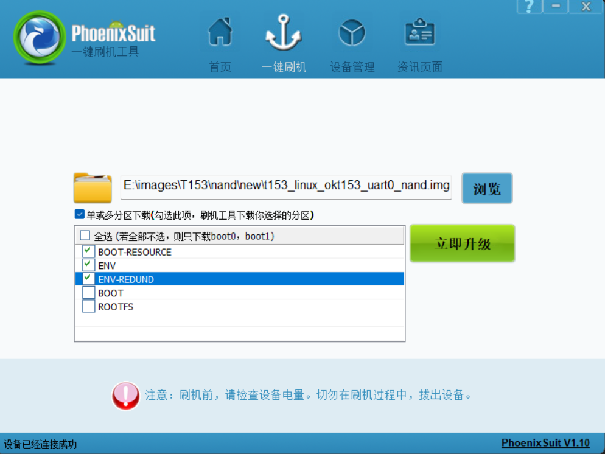
Connect the development board and the host using a Type-A to Type-C cable, power the board, and press and hold the FEL and RESET buttons simultaneously. Release the RESET button first, then release the FEL button. Wait for the programming to complete. Then, the following interface will pop up:
Note: Release RESET first, then release FEL.
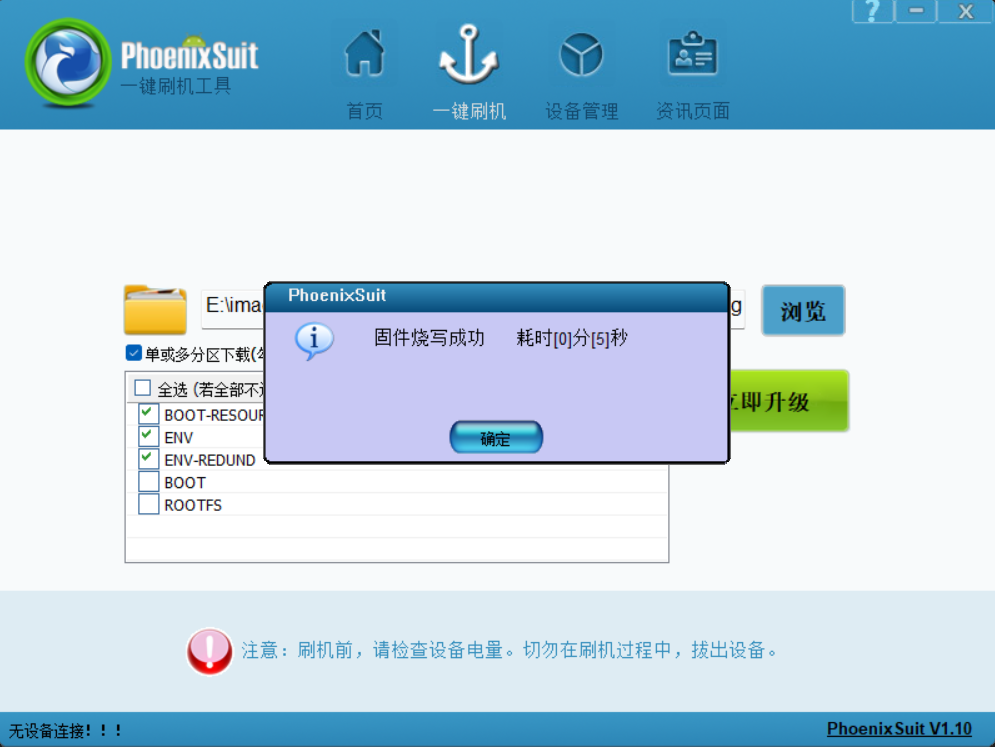
2）OTG Flashing Kernel Image and Device Tree DTB File
In the following interface, check the checkbox “Single or multi-partition download (select this option, the flashing tool will download the partitions you have selected)”, then check “BOOT-RESOURCE” and “BOOT”. The kernel image is placed in the “BOOT” partition, and the device tree dtb file and uboot are placed in the “BOOT-RESOURCE” partition.
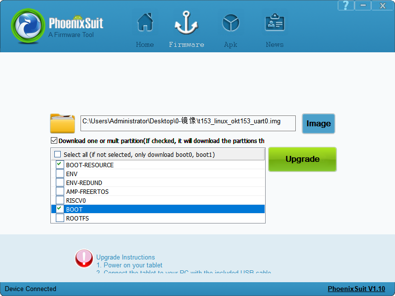
Connect the development board and the host using a Type-A to Type-C cable, power the board, and press and hold the FEL and RESET buttons simultaneously. Release the RESET button first, then release the FEL button. Wait for the programming to complete. Then, the following interface will pop up:
Note: Release RESET first, then release FEL.
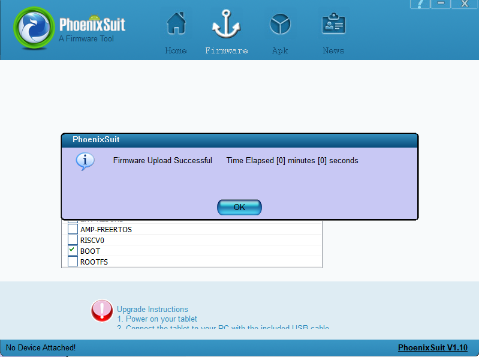
3 ）OTG System Flashing
In the following interface, check the checkbox “Single or multi-partition download (select this option, the flashing tool will download the partitions you have selected)”, then check “ROOTFS”.
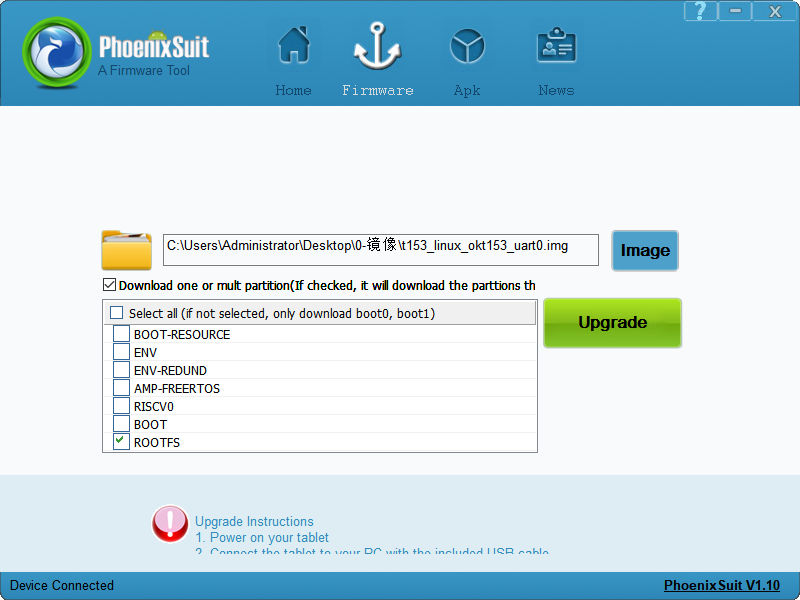
Connect the development board and the host using a Type-A to Type-C cable, power the board, and press and hold the FEL and RESET buttons simultaneously. Release the RESET button first, then release the FEL button. Wait for the programming to complete. Then, the following interface will pop up:
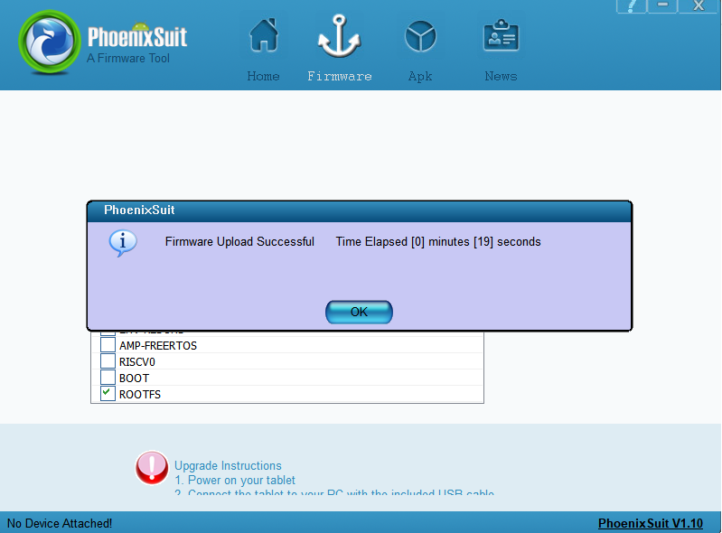
Note: Release RESET first, then release FEL.
5.2.3 Common OTG Flashing Issues
1. Driver Installation Failure
After following the manual to install the USB driver, some users still see an “Unknown device” in Device Manager. When expanding the “Unknown device” details, a message appears indicating that the third-party INF does not contain digital signature information, as shown in the figure below:

This issue occurs because some Windows systems, in order to prevent third-party programs from affecting system stability, block unsigned drivers from passing verification, causing the driver installation to fail. First disable the driver signature enforcement setting on the computer, and then proceed with the driver installation according to the manual.
Solution for unsigned third-party INF files:
1. Press and hold Shift + Restart;
2. At startup, select Troubleshoot – Advanced options – Startup Settings;
3. In the startup settings interface, click Restart in the lower right corner to restart and enter the startup settings. You can then disable driver signature enforcement using the number key 7 or the function key F7.
Incorrect Use of RESET FEL Buttons
When programming, you need to press the RESET key and the FEL key at the same time. When releasing them, release the RESET key first, and then release the FEL key.
Device Name Displayed but Board Not Recognized
This may be because there are many unknown devices in Device Manager, and selecting the wrong one could cause the driver to be installed to another device. First right-click the device item mentioned above, select “Uninstall device”, and check “Delete the driver software for this device”.
After uninstalling, disconnect other USB devices connected to the host, put the development board into flashing mode and connect it to the host, then repeat the above steps for installation.
5.3 TF Card Flashing
5.3.1 Creating a TF Flashing Card
Card making tool path: User Data\3-Tools\PhoenixCard_V4.1.9.zip
1. Insert an 8GB/16GB/32GB TF card into the PC’s USB interface via a card reader.
2. Copy the flashing tool PhoenixCard_V4.1.9.zip to any Windows directory, and double-click PhoenixCard.exe in the PhoenixCard_V4.1.9 folder.
The following interface will appear:
Note: If the TF card has multiple partitions, click “Restore Card” first, then click “Flash Card”; otherwise, the flashing process may fail.
3. Click “Firmware” to browse and select the T153 firmware image, select “Mass Production Card”, and click “Flash Card”.
Wait for the burning process to complete, as shown in the following interface:
5.3.2 TF Card Flashing Method
1. Insert the TF card into the development board, power on the board, and the system will automatically enter the programming process;
When the burning is complete, both the screen and the serial port will prompt:
CARD OK
[129.829]sprite success
Sprite_next_work=3
Next work 3
SUNXI_UPDATE_NEXT_ACTION_SHUTDOWN
[132.837][mmc]: mmc exit start
[132.856][mmc]: mmc 2 exit ok
The the following message prompts on the NAND board:
CARD OK
[94.347]sprite success
sprite_next_work=3
next work 3
SUNXI_UPDATE_NEXT_ACTION_SHUTDOWN
[97.355][mmc]: mmc exit start
[97.368][mmc]: mmc 2 cmd timeout 100 status 100
[97.372][mmc]: smc 2 err, cmd 1, RTO
[97.375][mmc]: mmc 2 close bus gating and reset
[97.380][mmc]: mmc card did not respond to voltage select!
[97.385][mmc]: mmc 2 exit failed
2. Remove the TF card and power on the board to start the system.
During mass production, the red LED on the SoM indicates the programming status as follows:
Preparation stage for flashing: The blue LED on the SoM goes out.
Programming complete stage: The SoM blue LED flashes.
You can also check the blue LED on the SoM to determine if the system has started normally.
Blue light flashing: System starts normally.
Blue light on: System fails to start.
TF card restore.
Recovery tool path: User Profile\3-Tools\PanasonicSDFormatter.zip
Copy PanasonicSDFormatter.zip to any directory on your Windows computer and extract it. Insert the TF card into your Windows computer and run SDFormatter.exe as administrator.
Click “Options Settings”, select Erase Format to restore the TF card.